机器学习笔记
第一章 绪论
- 假设空间
- 学习过程是在所有假设组成的空间中进行搜索的过程
- 目标：找到与训练集“匹配”的假设
- 版本空间：与训练集一致的假设集合
- 归纳偏好：机器学习算法在学习过程中对某种类型假设的偏好
- 任何一个有效的机器学习算法必有其偏好
- 奥卡姆剃刀原则：若有多个假设与观察一致，则选最简单的那个
- NFL 定理：一个算法 $\mathcal{E}_a$ 若在某些问题上比另一个算法 $\mathcal{E}_b$ 好，必存在另一些问题，$\mathcal{E}_b$ 比 $\mathcal{E}_a$ 好
- 前提：所有“问题”出现的机会相同、或所有问题同等重要
第二章 模型评估与选择
2.1 经验误差与过拟合
- 学习器在训练集上的误差称为“训练误差”或“经验误差”，在新样本上的误差称为“泛化误差”
- 机器学习面临的问题通常是NP难甚至更难，而有效的学习算法必然是在多项式时间内运行完成，若可彻底避免过拟合，则通过经验误差最小化就能获得最优解，这就意味着我们构造性地证明了“P=NP”；因此，只要相信“P≠NP”，过拟合就不可避免
2.2 评估方法
留出法
- 留出法（hold-out）：直接将数据集 $D$ 划分为两个互斥的集合，其中一个集合作为训练集 $S$，另一个作为测试集 $T$
- 分层采样：保留类别比例的采样方式
使用留出法时，一般要采用若干次随机划分、重复进行实验评估后取平均值作为留出法的评估结果。同时可得估计结果的标准差
- “偏差-方差”窘境：
- 测试集小时，评估结果的方差较大；训练集小时，评估结果的偏差较大
- “偏差-方差”窘境：
交叉验证法
- 将数据集划分成 $k$ 个大小相似的互斥子集，每个子集尽可能保持数据分布的一致性，即从 $D$ 中分层采样得到
- 为减小因划分不同而引入的差别，$k$ 折交叉验证通常要随机使用不同的划分重复 $p$ 次，最终评估结果是 $p$ 次 $k$ 折交叉验证结果的均值，如“10次10折交叉验证”
- “10次10折交叉验证法”与“100次留出法”都是进行了100次训练/测试
- 特例：留一法（LOO），$k=m$。实际评估的模型与期望评估的用 $D$ 训练出的模型很相似。因此，留一法的评估结果往往被认为比较准确。但计算开销大。
自助法（bootstrapping）
- 可重复采样/有放回采样，使训练集大小和数据集大小一样
- 始终不被采到的概率 $\lim_{m\rightarrow ∞}(1-\frac{1}{m})^m\rightarrow \frac{1}{e}=0.368$
- $D’$ 作训练集，$D\backslash D’$ 作测试集，实际评估的模型与期望评估的模型都使用 $m$ 个数据样本
- 约 $1/3$ 没在训练集出现的用于测试，测试结果称“包外估计”
- 常用于集成学习产生基分类器；但改变初始数据集分布，引入估计偏差
数据量足够：留出法/交叉验证法；数据集小、难以划分训练/测试集：自助法
模型选择完成后，学习算法和参数配置已选定，此时应该用数据集 $D$ （训练集+验证集）重新训练模型。这个模型在训练过程中使用了所有 $m$ 个样本，这才是最终模型
算法参数：人为指定，候选；模型参数：学习来产生多个候选模型（神经网络在不同轮数停止训练）
2.3 性能度量
- 查准率 $P$（准确率，precision）：被学习器预测为正例的样例中有多大比例是真正例。（挑出的西瓜中有多少比例是好瓜）
- $P=\frac{TP}{TP+FP}$
- 查全率 $R$（召回率，recall）：所有正例当中有多大比例被学习器预测为正例。（所有好瓜中有多少比例被挑了出来）
- $R=\frac{TP}{TP+FN}$
- 查准率和查全率是一对矛盾的度量。
- P-R曲线常是非单调、不平滑的，在很多局部有上下波动。通常不会取到(1,0)点，此时所有样本判为正例，且正例占比为0. 起点是（0，0）
- 一个学习器的P-R曲线被另一个学习器的曲线完全包住，可断言后者性能优于前者
- 平衡点 BEP（break-event point），查准率=查全率时的取值。综合考虑查准率、查全率的性能度量
- F1度量：$F1=\frac{2×P×R}{P+R}=\frac{2×TP}{样例总数+TP-TN}$
- 基于调和平均：$\frac{1}{F_1}=\frac{1}{2}\cdot(\frac{1}{P}+\frac{1}{R})$。调和平均倾向于靠近两数中较小的那一个，更重视较小值。高 F1，能保证精确率和召回率都比较高
- $F_\beta$ 加权调和平均：$\frac{1}{F_\beta}=\frac{1}{1+\beta^2}\cdot(\frac{1}{P}+\frac{\beta^2}{R})$。$\beta>1$ 时查全率有更大影响；$\beta<1$ 时查准率有更大影响
- macro：先在各混淆矩阵上分别计算出查准率和查全率。记为 $(P_1,R_1),(P_2,R_2),..,(P_n,R_n)$，再计算平均值
- 宏查准率：$macro-P=\frac{1}{n}\sum_{i=1}^n P_i$
- 宏查全率：$macro-R=\frac{1}{n}\sum_{i=1}^n R_i$
- 宏F1：$macro-F1=\frac{2×macro-P×macro-R}{macro-P+macro-R}$
- micro：先将各混淆矩阵的对应元素进行平均，得到 $TP,FP,TN,FN$ 的平均值，分别记为 $\overline{TP},\overline{FP},\overline{TN},\overline{FN}$，再基于这些平均值计算“微…”
- 微查准率：$micro-P=\frac{\overline{TP}}{\overline{TP}+\overline{FP}}$
- 微查全率：$micro-R=\frac{\overline{TP}}{\overline{TP}+\overline{FN}}$
- 微F1：$micro-F1=\frac{2×micro-P×micro-R}{micro-P+micro-R}$
截断点，根据分类阈值
- 若更重视”查准率“，可选择排序中靠前的位置进行截断
ROC纵轴是”真正例率“，横轴是”假正例率“
- TPR真正例率，$TPR=\frac{TP}{TP+FN}$，等于查全率（分母是所有正例数量）
- FPR假正例率，$FPR=\frac{FP}{TN+FP}$，所有反例中有多大比例被预测为正例（分母是所有负例数量）
ROC曲线
- 点(0,1)对应于将所有正例排在所有反例之前的”理想模型“；点(0,0)是起始点，将分类阈值设为一个不可能取到的超大值，如1；对角线是随机猜测
- 非减
- 变分类阈值时，若新增 $i$ 个假正例，相应的 $x$ 轴坐标就增加 $\frac{i}{m^-}$；若新增 $j$ 个真正例，相应的 $y$ 轴坐标就增加 $\frac{j}{m^+}$
- $l_{rank}=\frac{1}{m^+m^-}\sum_{x^+\in D^+}\sum_{x^-\in D^-}(\mathbb{I}(f(x^+)<f(x^-))+\frac{1}{2}\mathbb{I}(f(x^+)=f(x^-)))$。考虑每一对正反例，正例预测值小于反例，则记一个”罚分“，若相等，记0.5个”罚分“。
- $l_{rank}$ 对应的是ROC曲线之上的面积；AUC是ROC曲线下的面积，$AUC=1-l_{rank}$ 。
- $l_{rank}$ 指从测试集中随机抽取正反例对儿，模型 $f(x)$ ”排序错误“的概率；AUC是…,”排序正确“的概率
- 若一个正例在ROC曲线上对应标记点的坐标为(x,y)，则 $x$ 恰是排序在其之前的反例所占的比例，即假正例率
- 在样本不均衡下，ROC曲线仍能较好评价分类器性能。纵轴只考虑正例，横轴只考虑负例。比如负样本的数量增加到原来的10倍，那TPR不受影响，FPR的各项也是成比例的增加，并不会有太大的变化。
- 曲线”包住“可判断哪个学习器优于哪个；也可用AUC（曲线下面积）
- AUC-PR指标比AUC-ROC更具区分性。人们可能会观察到许多分类器的AUC-ROC分数彼此都非常接近，AUC-PR可能是一个更好的评估指标
2.5 偏差与方差
- 偏差-方差分解：用来解释学习算法泛化性能
- 测试样本 $x$，令 $y_D$ 是 $x$ 在数据集中标记，$y$ 是 $x$ 真实标记；
$f(x;D)$：训练集 $D$ 上学得模型 $f$ 在 $x$ 上的预测输出；
回归任务中，期望预测：$\overline{f}(x)=\mathbb{E}_D[f(x;D)]$；
样本数相同的不同训练集产生的方差：$var(x)=\mathbb{E}_D[(f(x;D)-\overline{f}(x))^2]$；
噪声是 $\epsilon^2=\mathbb{E}_D[(y_D-y)^2]$，假设噪声期望为0，$\mathbb{E}_D[y_D-y]=0$；
偏差（bias）：期望输出与真实标记的差别，$bias^2(x)=(\overline{f}(x)-y)^2$；
对算法的期望泛化误差进行分解：
- 偏差：度量了学习算法的期望预测与真实结果的偏离程度
- 刻画了学习算法本身的拟合能力
- 方差：度量了同样大小的训练集的变动所导致的学习性能的变化
- 刻画了数据扰动所造成的影响
- 噪声：表达了在当前任务上任何学习算法所能达到的期望泛化误差的下界
- 刻画了学习问题本身的难度
- 偏差-方差分解说明，泛化性能是由学习算法的能力、数据的充分性、学习任务本身的难度所共同决定的
- 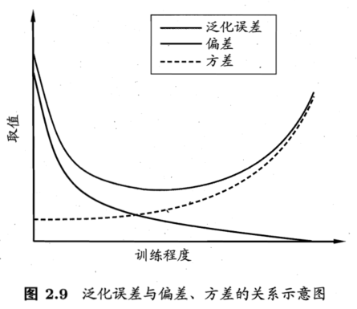
- 偏差-方差窘境
- 训练不足：拟合能力不强，训练数据扰动不能使学习器显著变化，偏差主导泛化错误率；
- 训练加深，训练数据扰动被学习器学到，方差主导泛化错误率；
- 训练充足后，拟合能力强，训练数据轻微扰动会使学习器显著变化；若训练数据自身的、非全局特性被学习器学到，则发生过拟合
- 偏置与数据无关，是由模型（的复杂度）决定的（如线性多项式、7阶多项式）
- 方差 $Var_D(f(x;D))$ 和抽样得到的训练集以及模型两者都有关系
- 集成方法可以减少偏置和方差
- 如何降低overfitting？
- 正则化 regularization
- 为什么正则化能防止过拟合？https://www.zhihu.com/question/20700829
- 正则化缩小了模型空间，保留了较简单的模型进行挑选
- PAC（没看）
第三章 线性模型
3.2 线性回归
- 若将无序属性连续化，则会不恰当地引入序关系，对后续处理如距离计算等造成误导
最小二乘法：基于均方误差最小化来进行模型求解
- 加平方的意义：① 平方可以消除误差正负方向上的差异，单纯的只比较长度。② 二次函数方便求导（和绝对值函数相比）
- 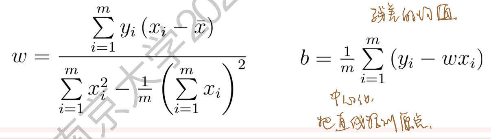
什么是凸函数？（西瓜书上的定义
- 对实数集上的函数，可通过求二阶导数来判别：若二阶导数在区间上非负，则称为凸函数；若二阶导数在区间上恒大于0，则称为严格凸函数
- 对 $w^TAw$ 求导是 $(A+A^T)w$，后面要跟一个 $w$
$\hat{w}=argmin_{w}L(w)=(X^TX)^{-1}X^TY=X^{+}Y$
- $(X^TX)^{-1}X^T$ 称为伪逆
- 对于非满秩的样本集合，需要对 $X$ 用奇异值分解（SVD），得 $X=U\Sigma V^T$，$X^{+}=V\Sigma^{-1}U^T$
几何解释：由样本张成一个 $d$ 维空间，并使 $Y$ 到该空间的距离越近越好。$Y$ 到该空间的投影即误差最小的预测值
- $Y$ 与其投影之差应与此张成的空间垂直，$X^T\cdot(Y-Xw)=0$，$w=(X^TX)^{-1}X^TY$
- 最小二乘估计中隐藏的假设条件：噪声符合高斯分布
- $y=w^Tx+\epsilon$，$\epsilon\sim \mathcal{N}(0,\sigma^2)$，用MLE（极大似然估计），表达式和最小二乘一样
- 权重先验也为高斯分布的MAP（最大后验估计）：先验 $w\sim\mathcal{N}(0,\sigma_0^2)$
- $\hat{w}=argmax_w p(w|Y)=argmax_w \log p(Y|w)p(w)=argmin_w[(y-w^Tx)^2+\frac{\sigma^2}{\sigma_0^2}w^Tw]$
- 这里假设噪声也是高斯分布
- $f(\hat{x_i})=\hat{x_i}^T(X^TX)^{-1}X^Ty$，当属性/变量数超过样例数，$X^TX$ 不满秩，可解出多个 $\hat{w}$，都能使均方误差最小化。选择哪一个解作为输出，将由学习算法的归纳偏好决定，常见的做法是引入正则化项。
- 对数线性回归，试图让 $e^{w^Tx+b}$ 逼近 $y$. $\ln y=w^Tx+b$ 在形式上仍是线性回归，但实质上已是在求取输入空间到输出空间的非线性函数映射
- 广义线性模型：考虑单调可微函数 $g(\cdot)$，令 $y=g^{-1}(w^Tx+b)$。$g(\cdot)$ 是联系函数。对数线性回归是广义线性模型在 $g(\cdot)=\ln(\cdot)$ 时的特例
- 广义线性模型的参数估计常通过加权最小二乘法或极大似然法进行
3.3 对数几率回归
英文：logistic regression
上面用线性模型进行回归学习，如果要做的是分类任务，用广义线性模型，只需找一个单调可微函数将分类任务的真实标记 $y$ 与线性回归模型的预测值联系起来
分类任务中，为解决阶跃函数作 $g^{-}(\cdot)$ 不可微，用对数几率函数 $y=\frac{1}{1+e^{-z}}$ 作为 $g^{-}(\cdot)$
- $y=\frac{1}{1+e^{-(w^Tx+b)}}$，变形为 $\ln \frac{y}{1-y}=w^Tx+b$。正例和反例可能性的比值是 $\frac{y}{1-y}$ 称为“几率”，反映 $x$ 作为正例的相对可能性
$\ln\frac{p(y=1|x)}{p(y=0|x)}=w^Tx+b$
- $p(y=1|x)=\frac{e^{w^Tx+b}}{1+e^{w^Tx+b}}$；$p(y=0|x)=\frac{1}{1+e^{w^Tx+b}}$
对数几率回归：用线性回归模型的预测结果去逼近真实标记的对数几率
- 一种分类学习方法
- 优点：直接对分类可能性建模，无需事先假设数据分布，避免假设分布不准确带来的问题
- 不仅预测“类别”，而且可得近似概率预测
- 对率函数是任意阶可导的凸函数
- 用极大似然法，对率回归模型最大化“对数似然” $l(w,b)=\sum_{i=1}^{m}\ln p(y_i|x_i;w,b)$
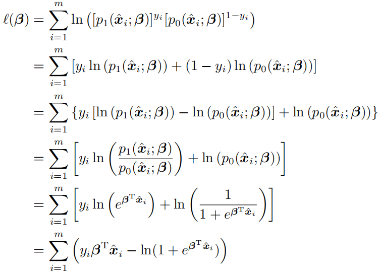
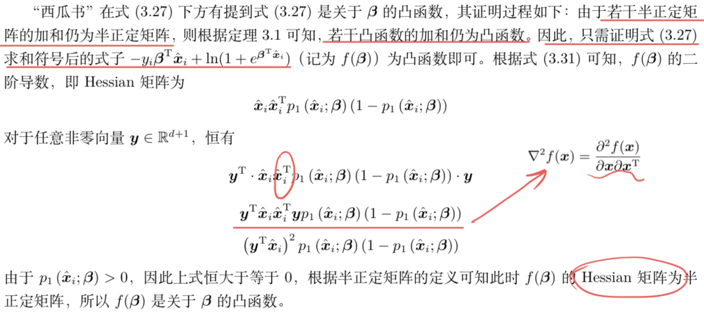
- 用牛顿法，迭代解更新公式 $\beta’=\beta-(\frac{\partial^2 l(\beta)}{\partial \beta\partial \beta^T})^{-1}\frac{\partial l(\beta)}{\partial\beta}$
- 南瓜书 3.3.2/3.3.3
- 梯度下降法和牛顿法都是迭代求解算法，但在选取第 $t+1$ 个点 $x^{t+1}$ 时所用的策略不同，即迭代公式不同
- 梯度下降法
- 梯度下降法利用“梯度指向的方向是函数值增大速度最快的方向”这一特性，每次迭代时朝着梯度的反方向进行，进而实现函数值越迭代越小
- 每次选取 $x^{t+1}$ 时，只要求通过泰勒公式在 $x^t$ 的邻域内找到一个函数值比其更小的点即可
- 需要判断当前点是否使得函数取到了最小值。可以预先设定一个极小的阈值 $\epsilon$，当某次迭代造成的函数值波动已经小于 $\epsilon$ 时，即 $|f(x^{t+1})-f(x^t)|<\epsilon$，便可以近似地认为此时 $f(x^{t+1})$ 取到了最小值
- 牛顿法则期望在此基础上，$x^{t+1}$ 还必须是 $x^t$ 的邻域内的极小值点。对泰勒二阶展示求导 $x^{t+1}=x^t-[\nabla^2 f(x^t)]^{-1}\nabla f(x^t)$。
- 牛顿法每次迭代要算Hessian矩阵的逆矩阵，计算量大；改成求计算量更低的近似逆矩阵，即“拟牛顿法”
- 多元函数取到极值点的必要条件是其梯度等于零向量，迭代公式是根据极值点的必要条件推导而得，因此并不保证一定是极小值点
3.4 线性判别分析
有监督
LDA与Fisher判别分析稍有不同，LDA假设了各类样本的协方差矩阵相同且满秩
线性判别分析（Linear Discriminant Analysis, LDA），线性学习方法，分类/降维
思想：给定训练样例集，设法将样例投影到一条直线上，使得同类样例的投影点尽可能接近、异类样例的投影点尽可能远离；（类间散度尽可能大，类内散度尽可能小）
在对新样本进行分类时，将其投影到同样的这条直线上，再根据投影点的位置来确定新样本的类别
监督降维方法
利用 Lagrange 乘子法，可将带约束的极值问题转化为无约束极值问题来进行求解
3.5 多分类学习
- 多分类任务的基本思路是“拆解法”，即将多分类任务拆为若干个二分类任务求解。
- 关键是如何对多分类任务进行拆分，以及如何对多个分类器进行集成
拆分策略
- 一对一（One vs. One）
- 将 $N$ 个类别两两配对，产生 $\frac{N(N-1)}{2}$ 个二分类任务（每对训练时一正一反）
- 测试时，样本提交给所有分类器，得到 $\frac{N(N-1)}{2}$ 个分类结果，投票产生最终结果
- 一对多（One vs. Rest）
- 每次将一个类的样例作为正例、所有其他类的样例作为反例来训练 $N$ 个分类器
- 测试时若仅有一个分类器预测为正类，则对应的类别标记作为最终分类结果；若有多个分类器预测为正类，通常考虑各分类器的预测置信度，选择置信度最大的类别标记作为分类结果
- 多对多（MvM）
- 每次将若干个类作为正类，若干个其他类作为反类
- 最常用 MvM 技术：纠错输出码（ECOC, error correcting output codes）
- 编码：对 $N$ 个类别做 $M$ 次划分，每次划分将一部分类别划为正类，一部分划为反类，形成一个二分类训练集。一共产生 $M$ 个训练集，可训练出 $M$ 个分类器
- 解码：$M$ 个分类器分别对测试样本进行预测，预测标记组成一个编码。将这个预测编码与每个类别各自的编码进行比较，返回其中距离最小的类别作为最终预测结果
- 编码矩阵：二元码、三元码（正、反类+停用类）
- 海明距离（有几个数不同）、欧式距离
- 对同一个学习任务，ECOC 编码越长，纠错能力越强；但所需训练的分类器越多，计算、存储开销都会增大
- 一对一（One vs. One）
OvO的存储开销和测试时间开销通常比OvR更大。在类别很多时，OvO的训练时间开销通常比OvR更小
- 对 OvR、MvM 来说，由于对每类进行了相同的处理，其拆解出的二分类任务中类别不平衡的影响会相互抵消，因此通常不需专门处理
3.6 类别不平衡问题
- 分类器决策规则为：若 $\frac{y}{1-y}>1$ 时，预测为正例
- 类别不平衡学习的一个基本策略：再缩放（rescaling）$\frac{y’}{1-y’}=\frac{y}{1-y}× \frac{m^-}{m^+}$
- 基于的假设是“训练集是真实样本总体的无偏采样”，但往往不成立
- 三种做法
- 对训练集中的反例“欠采样”
- 对训练集中的正例“过采样”
- 直接基于原始训练集进行学习，预测时将上面的式子嵌入到其决策过程中，称为“阈值移动”
- 过采样
- SMOTE：通过对训练集里的正例进行插值来产生额外的正例
- 算法的基本思想是对每个少数类样本 $x_i$ ，从它的最近邻中随机选择一个样本 $\hat{x}_i$ （ $\hat{x}_i$ 是少数类中的一个样本，默认用1表示），然后在 $x_i$ 和 $\hat{x}_i$ 之间的连线上随机选择一点作为新合成的少数类样本。https://zhuanlan.zhihu.com/p/346945838
- SMOTE：通过对训练集里的正例进行插值来产生额外的正例
- 欠采样
- EasyEnsemble：利用集成学习机制，将反例划分为若干个集合供不同学习器使用，这样对每个学习器来看都进行了欠采样，但在全局来看却不会丢失重要信息
- 通过重复组合正样本与随机抽样的同样数量的负样本，训练若干数量分类器进行集成学习
- EasyEnsemble：利用集成学习机制，将反例划分为若干个集合供不同学习器使用，这样对每个学习器来看都进行了欠采样，但在全局来看却不会丢失重要信息
“再缩放”也是“代价敏感学习”的基础。在代价敏感学习中将 $\frac{y’}{1-y’}=\frac{y}{1-y}× \frac{m^-}{m^+}$ 中的 $\frac{m^-}{m^+}$ 用 $\frac{cost^+}{cost^-}$ 代替即可，其中 $cost^+$ 是将正例误分为反例的代价，$cost^-$ 是将反例误分为正例的代价
非均等代价和类别不平衡虽然都可借助“再缩放”技术，但两者本质不同。需注意的是类别不平衡学习中通常是较小类的代价更高，否则无需进行特殊处理
第4章 决策树
4.1 基本流程
- 叶结点对应于决策结果，其他每个结点则对应于一个属性测试
- 基本流程遵循“分而治之”策略
三种情形会导致递归返回
- 当前结点包含的样本全属于同一类别，无需划分
当前属性集为空，或是所有样本在所有属性上取值相同，无法划分
- 把当前结点标记为叶结点，并将其类别设定为该结点所含样本最多的类别（利用当前结点的后验分布）
当前结点包含的样本集为空，不能划分
- 把当前结点标记为叶结点，但将其类别设定为其父结点所含样本最多的类别（把父结点的样本分布作为当前结点的先验分布）
4.2 划分选择
- 熵：对可能产生的信息量的期望（信息量 $-\log_2p(x)$）
- 信息熵：随机变量的不确定性。度量样本集合纯度。假定当前样本集合 $D$ 中第 $k$ 类样本所占的比例为 $p_k$ （$k=1,2,…,|\mathcal{Y}|$），则 $D$ 的信息熵定义为 $Ent(D)=-\sum_{k=1}^{|\mathcal{Y}|}p_k\log_2p_k$
- 最小值 0，最大值 $\log_2|\mathcal{Y}|$。（用拉格朗日乘子法）
- 值越小，纯度越高
- 信息增益 / 互信息：已知一个随机变量的信息后另一个随机变量的不确定性减少的程度（可粗略地看成相似程度或者相关程度）
- 定义为信息熵和条件熵的差：$I(Y;X)=Ent(Y)-Ent(Y|X)=\sum_{x,y}p(x,y)\log_2\frac{p(x,y)}{p(x)p(y)}=D_{KL}(p(x,y)||p(x)p(y))$
- 书中：考虑到不同的分支结点所包含的样本数不同，给分支结点赋予权重 $\frac{|D^v|}{|D|}$，即样本数越多的分支结点影响越大，可计算出用属性 $a$ 对样本集 $D$ 进行划分所获得的“信息增益”：$Gain(D,a)=Ent(D)-\sum_{v=1}^V\frac{|D^v|}{|D|}Ent(D^v)$
- 条件熵：在已知一个随机变量的条件下，另一个随机变量的不确定性。
- 在已知 $X$ 的条件下，随机变量 $Y$ 的条件熵为 $Ent(Y|X)=\sum_{i=1}^n p_i Ent(Y|X=x_i)$。其中 $p_i=P(X=x_i)$
$ID3$ 决策树学习算法就是以信息增益为准则来选择划分属性：$a_*=\arg\max_{a\in A}Gain(D,a)$
信息增益的缺点：对可取值数目较多的属性有所偏好
- $C4.5$ 决策树算法，使用“增益率”来选择最优划分属性（避免信息增益的缺点）
- 增益率：$Gain_ratio(D,a)=\frac{Gain(D,a)}{IV(a)}$
- $IV(a)=-\sum_{v=1}^V \frac{|D^v|}{|D|}\log_2\frac{|D^v|}{|D|}$，称为属性 $a$ 的固有值(intrinsic value)，属性 $a$ 的可能取值数目越多（即 $V$ 越大），则 $IV(a)$ 的值通常会越大
- 增益率准则可对取值数目较少的属性有所偏好，因此 $C4.5$ 算法并不是直接选择增益率最大的候选划分属性，而是使用了一个启发式：先从候选划分属性中找出信息增益高于平均水平的属性，再从中选择增益率最高的
- $CART$ 决策树使用“基尼指数”来选择划分属性。（Classification and Regression Tree，分类和回归任务都可用，是二叉树）
- 数据集 $D$ 的纯度可用基尼值来度量：$Gini(D)=\sum_{k=1}^{|\mathcal{Y}|}\sum_{k’\not=k}p_kp_{k’}=1-\sum_{k=1}^{|\mathcal{Y}|}p_k^2$
- $Gini(D)$ 反映了从数据集 $D$ 中随机抽取两个样本，其类别标记不一致的概率
- $Gini(D)$ 越小，则数据集 $D$ 的纯度越高
- 属性 $a$ 的基尼指数定义为 $Gini_index(D,a)=\sum_{v=1}^V\frac{|D^v|}{|D|}Gini(D^v)$
- 在候选属性集合 $A$ 中，选择那个使得划分后基尼指数最小的属性作为最优划分属性，即 $a_*=\arg\min_{a\in A}Gini_index(D,a)$
- ID3：信息增益
- C4.5：启发式+增益率
- CART：基尼指数+二分法对连续属性进行处理+处理缺失值（下面提到的方法）
4.3 剪枝处理
- 剪枝，防止过拟合
- 预剪枝：在决策树生成过程中，对每个结点在划分前先进行估计，若当前结点的划分不能带来决策树泛化性能提升，则停止划分并将当前结点标记为叶结点
- 后剪枝：先从训练集生成一棵完整的决策树，然后自底向上地对非叶节点进行考察，若将该结点对应的子树替换为叶结点能带来决策树泛化性能提升，则将该子树替换为叶结点
- 用留出法，预留一部分数据用作“验证集”以进行性能评估
- 仅有一层划分的决策树，称为“决策树桩”
- 预剪枝
- 优点：降低过拟合风险，显著减少决策树的训练时间开销和测试时间开销
- 缺点：有些分支当前划分不能提升泛化性能，但后续划分可能提高性能。基于“贪心”，可能有欠拟合风险
- 后剪枝
- 优点：欠拟合风险小，泛化性能往往优于预剪枝决策树
- 缺点：后剪枝在生成完全决策树后进行的，要自底向上地对树中的所有非叶结点进行逐一考察，因此训练时间开销比未剪枝决策树和预剪枝决策树都要大得多
4.4 连续与缺失值
- 连续值处理
- 连续属性离散化
- $C4.5$ 决策树中：用二分法对连续属性进行处理
- 给定样本集 $D$ 和连续属性 $a$，假定 $a$ 在 $D$ 上出现了 $n$ 个不同的取值，考察包含 $n-1$ 个元素的候选划分点集合 $T_a=\{\frac{a^i+a^{i+1}}{2}|1\leq i\leq n-1\}$
- 与离散属性不同，若当前结点划分属性为连续属性，该属性还可作为其后代结点的划分属性
- 缺失值处理
- 问题一：如何在属性值缺失的情况下进行划分属性选择？
- 对属性 $a$，$\rho$ 表示无缺失值样本所占的比例，$\tilde{p}_k$ 表示无缺失值样本中第 $k$ 类所占的比例，$\tilde{r}_v$ 表示无缺失值样本中在属性 $a$ 上取值 $a^v$ 的样本所占的比例
- $Gain(D,a)=\rho× Gain(\tilde{D},a)=\rho× (Ent(\tilde{D})-\sum_{v=1}^V\tilde{r}_v Ent(\tilde{D}^v))$
- $Ent(\tilde{D})=-\sum_{k=1}^{|\mathcal{Y}|}\tilde{p}_k\log_2\tilde{p}_k$
- 问题二：给定划分属性，若样本在该属性上的值缺失，如何对样本进行划分？
- 若样本 $x$ 在划分属性 $a$ 上的取值已知，则将 $x$ 划入与其取值对应的子结点，且样本权值在子结点中保持为 $w_x$
- 若样本 $x$ 在划分属性 $a$ 上的取值未知，则将 $x$ 同时划入所有子结点，且样本权值在与属性值 $a^v$ 对应的子结点中调整为 $\tilde{r}_v\cdot w_x$；直观来看，就是让一个样本以不同的概率划入到不同的子结点中去
4.5 多变量决策树
若我们把每个属性视为坐标空间中的一个坐标轴，则 $d$ 个属性描述的样本就对应了 $d$ 维空间中的一个数据点。决策树形成的分类边界特点：轴平行
多变量决策树
- 实现斜划分，用斜的划分边界
- 非叶结点不再是仅对某个属性，而是对属性的线性组合进行测试
- 与传统的“单变量决策树”不同，在多变量决策树的学习过程中，不是为每个非叶结点寻找一个最优划分属性，而是试图建立一个合适的线性分类器
第五章 神经网络
5.1 神经元模型
- M-P神经元模型：$y=f(\sum_{i=1}^nw_ix_i-\theta)$
- 10个神经元两两连接，则有100个参数：90个连接权和10个阈值
- 看成有向完全图，每一个神经元都拥有来自其他9个神经元的权重 和 1个阈值
5.2 感知机与多层网络
- 感知机由两层神经元组成，输入层接收外界信号后传递给输出层，输出层是M-P神经元
更一般地，给定训练数据集，权重 $w_i\,(i=1,2,…,n)$ 以及阈值 $\theta$ 可通过学习得到。阈值 $\theta$ 可看作一个固定输入为 $-1.0$ 的“哑结点”所对应的连接权重 $w_{n+1}$，这样，权重和阈值的学习就可统一为权重的学习
学习规则：
- 对训练样例 $(x,y)$，若当前感知机的输出为 $\hat{y}$，则感知机权重将这样调整：$\triangle w_i=\eta(y-\hat{y})x_i,\, w_i\leftarrow w_i+\triangle w_i$。根据错误的程度进行权重调整
- 极小化损失函数的解 $\min_{w,\theta}L(w,\theta)=\min_{w,\theta}\sum_{x_i\in M}(\hat{y}_i-y_i)(w^Tx_i-\theta)$
- 感知机的学习算法具体采用的是随机梯度下降法，极小化过程中一次随机选取一个误分类点使其梯度下降
感知机只有输出层神经元进行激活函数处理，即只拥有一层功能神经元，学习能力非常有限
异或问题是非线性可分问题，用两层感知机能解决，隐含层和输出层神经元都是拥有激活函数的功能神经元
- 多层前馈神经网络：每层神经元与下一层神经元全互连，神经元之间不存在同层连接，也不存在跨层连接
- 前馈并不意味着网络中信号不能向后传，而是指网络拓扑结构上不存在环或回路
- 输入层神经元仅是接受输入，不进行函数处理，隐层和输出层包含功能神经元
- 神经网络的学习过程，就是根据训练数据来调整神经元之间的“连接权”以及每个功能神经元的阈值
- 换言之，神经网络学到的东西，蕴含在连接权与阈值中
5.3 误差逆传播算法
- 误差逆传播/反向传播算法（error BackPropagation）
- 过程
- 将输入示例提供给输入层神经元，然后逐层将信号前传，直到产生输出层的结果
- 计算输出层的误差
- 再将误差逆向传播至隐层神经元
- 最后根据隐层神经元的误差来对连接权和阈值进行调整
- 其中要计算输出层神经元的梯度项和隐层神经元的梯度项
- 标准BP算法 VS 累积BP算法
- 标准BP算法：
- 每次仅针对单个样例更新连接权重和阈值
- 参数更新得非常频繁，而且对不同样例进行更新的效果可能出现“抵消”现象
- 为了达到同样的累积误差极小点，标准BP算法往往需进行更多次数的迭代
- 累积BP算法：
- 直接针对累积误差最小化，在读取整个训练集 $D$ 一遍后才对参数进行更新
- 参数更新频率低得多
- 但很多任务中，累积误差下降到一定程度之后，进一步下降会非常缓慢（这时标准BP往往会更快获得较好的解，尤其是在训练集 $D$ 非常大时更明显）
- 标准BP算法和累积BP算法的区别类似于随机梯度下降（SGD）与标准梯度下降之间的区别
- 标准BP算法：
- BP神经网络缓解过拟合策略
- 早停：若训练集误差降低但验证集误差升高，则停止训练，同时返回具有最小验证集误差的连接权和阈值
- 正则化：在误差目标函数中增加一个用于描述网络复杂度的部分
- 增加连接权与阈值平方和这一项后，训练过程将会偏好比较小的连接权和阈值，使网络输出更加“光滑”，从而对过拟合有所缓解
5.4 全局最小与局部最小
- 梯度下降法就是沿着负梯度方向搜索最优解
- 感知机更新规则式和BP更新规则式都是基于梯度下降
- 跳出局部极小的策略
- 以多组不同参数值初始化多个神经网络。相当于从多个不同的初始点开始搜索
- 模拟退火技术。模拟退火在每一步都以一定的概率接受比当前解更差的结果，从而有助于“跳出”局部极小。在每部迭代过程中，接受“次优解”的概率要随着时间的推移而逐渐降低，从而保证算法稳定。（但是也会造成“跳出”全局最小）
- 使用随机梯度下降。与标准梯度下降法精确计算梯度不同，随机梯度下降法在计算梯度时加入了随机因素。于是，即便陷入局部极小点，它计算出的梯度仍可能不为零，这样就有机会跳出局部极小继续搜索
5.5 其他常见神经网络
RBF网络（Radial Basis Function，径向基函数）
- 单隐层前馈神经网络（单隐层较常见），使用径向基函数作为隐层神经元激活函数，而输出层则是对隐层神经元输出的线性组合
- 假定输入为 $d$ 维向量 $x$，输出为实值，则RBF网络可表示为 $\phi(x)=\sum_{i=1}^qw_i\rho(x,c_i)$
- $q$ 为隐层神经元个数，$c_i$ 和 $w_i$ 分别是第 $i$ 个隐层神经元所对应的中心和权重，$\rho(x,c_i)$ 是径向基函数，这是某种沿径向对称的标量函数，通常定义为样本 $x$ 到数据中心 $c_i$ 之间欧氏距离的单调函数。常用的高斯径向基函数形如 $\rho(x,c_i)=e^{-\beta_i||x-c_i||^2}$
- 足够多隐层神经元的RBF网络能以任意精度逼近任意连续函数
- 两步过程来训练RBF网络：
- 确定神经元中心 $c_i$，常用的方式包括随机采样、聚类等
- 利用BP算法等来确定参数 $w_i$ 和 $\beta_i$
ART网络
- 竞争型学习是神经网络中一种常用的无监督学习策略。在使用该策略时，网络的输出神经元相互竞争，每一时刻仅有一个竞争获胜的神经元被激活，其他神经元的状态被抑制。这种机制亦称“胜者通吃”原则
- ART网络是竞争型学习的重要代表
- 比较层、识别层、识别阈值和重置模块
- 识别阈值较高时，输入样本将会被分成比较多、比较精细的模式类；而如果识别阈值较低，则会产生比较少、比较粗略的模式类
- ART比较好地缓解了竞争型学习中的“可塑性-稳定性窘境”
- 可进行增量学习或在线学习
- 增量学习是指在学得模型后，再接收到训练样例时，仅需根据新样例对模型进行更新，不必重新训练整个模型，且先前学得的有效信息不会被“冲掉”
- 在线学习是指每获得一个新样本就进行一次模型更新
- 在线学习是增量学习的特例，而增量学习可视为“批模式”的在线学习
- SOM网络（Self-Organizing feature Map，自组织特征映射）
- 竞争型的无监督神经网络
- 将高维数据映射到低维空间（通常为2维），高维空间中相似的样本点映射到网络输出层中邻近神经元
- 每个神经元拥有一个权向量
- 目标：为每个输出层神经元找到合适的权向量以保持拓扑结构（降维、聚类）
- 训练
- 网络接收输入样本后，将会确定输出层的“获胜”神经元（胜者通吃）
- 获胜神经元的权向量将向当前输入样本移动
- 级联相关网络（Cascade-Correlation）
- 结构自适应网络的重要代表
- 构造性神经网络：将网络的结构也当做学习的目标之一，希望在训练过程中找到适合数据的网络结构
- 训练：
- 开始时只有输入层和输出层
- 级联：新的隐层结点逐渐加入，从而创建起层级结构
- 相关：最大化新结点的输出与网络误差之间的相关性
- 与一般的前馈神经网络相比，级联相关网络无需设置网络层数、隐层神经元数目，且训练速度较快，但其在数据较小时易陷入过拟合
- Elman网络
- 递归神经网络
- 网络中可以有环形结构，可让使一些神经元的输出反馈回来作为输入
- $t$ 时刻网络的输出状态：由 $t$ 时刻的输入状态和 $t-1$ 时刻的网络状态共同决定
- Elman网络是最常用的递归神经网络之一
- 结构与前馈神经网路很相似，但隐层神经元的输出被反馈回来
- 使用推广的BP算法训练
- 递归神经网络
5.6 深度学习
- trick
- 预训练+微调
- 预训练：无监督逐层训练（自编码器？）+ 每次训练一层隐结点
- 微调：预训练全部完成后，对全网络进行微调训练
- “预训练+微调”的做法可视为将大量参数分组，对每组先找到局部看来比较好的设置，然后再基于这些局部较优的结果联合起来进行全局寻优。在利用了模型大量参数所提供的自由度的同时，节省了训练开销
- Dropout
- 在每轮训练时随机选择一些参数令其不被更新（下一轮可能被更新）
- 降低Rademacher复杂度
- 预训练+微调
第6章 支持向量机
6.1 间隔与支持向量
- 对线性可分的情形，构造硬间隔，位于间隔边界上的样本点称为支持向量（硬间隔的支持向量）。
什么是支持向量？
对于可分情况
- 支持向量是落在间隔超平面 $w\cdot x_i+b=\pm 1$ 上的样本。
- 支持向量可以完全定义最大间隔超平面或SVM问题的解，这便是算法命名的由来
- 支持向量的权重向量 $w$ 是支持向量的 $x_i$ 的线性组合 $w=\sum_{i=1}^m a_iy_ix_i$（只有支持向量的 $a_i\not=0$）
对于不可分情况
- 支持向量落在间隔超平面 $w\cdot x_i+b=\pm 1$ 上，或者是一个异常点（松弛变量大于0 的点 / 没有落在间隔超平面相应的正确一侧）
- SVM 的目标是最大化间隔
- 间隔：离超平面 $wx+b=0$ 最近的正/负样本到超平面的距离
- 为了保证每个超平面的参数只有唯一解，额外约束离超平面最近的正负样本代入超平面方程后的绝对值为1，即支持向量到超平面的距离被约束为 $\frac{1}{||w||}$
- 有个前提：最近的正/负样本到超平面的距离相等
- 一个点（样例）的边际margin是其到分界超平面的垂直距离
- SVM最大化（所有训练样本的）最小边际
- 有最小边际的点称为支持向量
- 虽然在一个特定问题中支持向量机的解是唯一的，但是支持向量可能不唯一。对于 $N$ 维问题，$N+1$ 个点已经足够定义超平面。因此当超过 $N+1$ 个点落在间隔超平面上时，对于 $N+1$ 个支持向量可能会有不同的选择
- 区别（划分）超平面和间隔超平面
- 划分超平面通过线性方程 $w^Tx+b=0$ 来描述。
- $w$ 为法向量，决定了超平面的方向
- $b$ 为位移项，决定了超平面与原点之间的距离
- SVM的基本型
6.2 对偶问题
什么是凸优化问题？
目标函数 $f(x)$ 是凸函数，不等式约束 $g_i(x)$ 是凸函数，等式约束 $h_j(x)$ 是仿射函数
Lagrange 对偶问题的最优值，用 $d^$ 表示，是通过 Lagrange 函数得到的原问题最优值 $p^$ 的最好下界。$d^\leq p^$（弱对偶性，即使原问题不是凸问题，亦成立）
- $p^*=\inf_x\sup_{\lambda\geq 0}L(x,\lambda)$
- $d^*=\sup_{\lambda\geq 0}\inf_x L(x,\lambda)$
当 Slater 条件成立（且原问题是凸问题）时，强对偶性成立
- Slater条件：当主问题是凸优化问题，且存在一点 $x\in \,relint\,D$ （定义域的相对内部）能使得所有等式约束成立，除仿射函数以外的不等式约束严格成立，则强对偶性成立
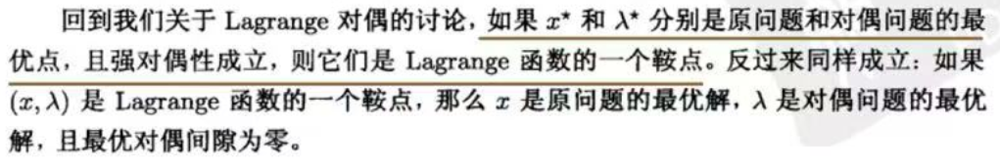
若某个凸优化问题具有可微的目标函数和约束函数，且其满足 Slater 条件，那么 KKT 条件是最优性的充要条件：Slater 条件意味着最优对偶间隙为零且对偶最优解可以达到，因此 $x$ 是原问题最优解，当且仅当存在 $(\lambda,\mathcal{v})$，二者满足 KKT 条件。（KKT 条件和强对偶关系是等价关系）
非凸问题不能用 Slater 条件（该条件要求问题是凸）来判断强对偶性
凸问题的 KKT 条件
- 在推导对偶问题时，常通过将拉格朗日函数 $L(x,\lambda,\mu)$ 对 $x$ 求导并令导数为0，来获得对偶函数的表达形式
- 对于强对偶性成立的优化问题，其主问题的最优解 $x^$ 一定满足KKT条件，而KKT条件中的其中一条就要求最优解 $x^$ 能使得拉格朗日函数 $L(x,\lambda,\mu)$ 关于 $x$ 的一阶导数等于0
- 对于任意优化问题，若拉格朗日函数 $L(x,\lambda,\mu)$ 是关于 $x$ 的凸函数，那么此时对 $L(x,\lambda,\mu)$ 关于 $x$ 求导并令导数等于0解出来的点一定是最小值点。根据对偶函数的定义可知，将最小值点代回 $L(x,\lambda,\mu)$ 即可得到对偶函数
对偶形式
解出 $\alpha$ 后，求出 $w$ 与 $b$ 即可得到模型 $f(x)=w^Tx+b=\sum_{i=1}^m\alpha_iy_ix_i^Tx+b$
- 对于任意支持向量 $x_i$，$w^Tx_i+b=y_i$，因此 $b=y_i-\sum_{j=1}^m\alpha_jy_jx_j^Tx_i$。可以取平均
- 为什么用对偶形式？
- 原问题优化变量的维度是样本特征个数 $d$ ，对偶问题优化变量的维度等于训练样本个数 $m$，通常 $m\ll d$，通常求解对偶问题更高效，反之求解原问题更高效
- 对偶问题目标式中有样本内积 $x_i^Tx_j$ 的形式，后续可以很自然地引入核函数，进而使得支持向量机也能对在原始特征空间线性不可分的数据进行分类
- 二次规划问题（QP）：目标函数是变量的二次函数，而约束条件是变量的线性不等式
- 解法：椭球法、内点法、增广拉格朗日法、梯度投影法
对偶问题是一个二次规划问题，但问题规模正比于训练样本数，实际中开销大
- SMO算法：每次选择两个变量 $\alpha_i$ 和 $\alpha_j$，并固定其他参数。这样，在参数初始化后，SMO不断执行如下两个步骤直至收敛：
- 选取一对需更新的变量 $\alpha_i$ 和 $\alpha_j$
- 固定 $\alpha_i$ 和 $\alpha_j$ 以外的参数，求解对偶问题目标式获得更新后的 $\alpha_i$ 和 $\alpha_j$
- SMO 先选取违背 KKT 条件程度最大的变量，第二个变量应选择一个使目标函数值减小最快的变量，但比较各变量所对应的目标函数值减幅的复杂度过高，因此 SMO 采用了一个启发式：
- 使选取的两变量所对应样本之间的间隔最大（有很大差别）
- 消去 $\alpha_j$ 后得到一个关于 $\alpha_i$ 的一元二次问题，仅有的约束是 $\alpha_i\geq 0$，有闭式解
- SMO算法：每次选择两个变量 $\alpha_i$ 和 $\alpha_j$，并固定其他参数。这样，在参数初始化后，SMO不断执行如下两个步骤直至收敛：
求 $b$
- $S=\{i|\alpha_i>0,i=1,2,…,m\}$ 为所有支持向量的下标集
- 鲁棒的做法：使用所有支持向量求解的平均值：$b=\frac{1}{|S|}\sum_{s\in S}(y_s-\sum_{i\in S}\alpha_iy_ix_i^Tx_s)$
6.3 核函数
只要一个对称函数所对应的核矩阵半正定，它就能作为核函数使用
对于一个半正定核矩阵，总能找到一个与之对应的映射 $\phi$（映射函数 $\not=$ 核函数）。换言之，任何一个核函数都隐式地定义了一个称为”再生核希尔伯特空间“的特征空间
常见核函数（线性核、多项式核、高斯核、拉普拉斯核、sigmoid核）
以下核函数的组合也是核函数
- 线性组合 $\gamma_1\kappa_1+\gamma_2\kappa_2$
- 核函数的直积 $\kappa_1\otimes\kappa_2(x,z)=\kappa_1(x,z)\kappa_2(x,z)$
- 对于任意函数 $g(x)$，$\kappa(x,z)=g(x)\kappa_1(x,z)g(z)$
$K(x,y)=\phi(x)^T\phi(y)$，非线性函数 $K$ 表示两个向量的相似程度 （高维特征的内积？）
6.4 软间隔与正则化
硬间隔：要求所有样本均满足约束，即所有样本都必须划分正确
软间隔：允许某些样本不满足约束 $y_i(w^Tx_i+b)\geq 1$
采用 hinge 损失，引入”松弛变量“ $\xi_i\geq0$
对偶问题解出 $C=\alpha_i+\mu_i$
- 若 $\alpha_i=0$，则该样本不会对 $f(x)$ 有任何影响
- 若 $\alpha_i>0$，则必有 $y_if(x_i)=1-\xi_i$，即该样本是支持向量
- 若 $\alpha_i
- 若 $\alpha_i=C$，则 $\mu_i=0$，此时若 $\xi_i\leq 1$ 则该样本落在最大间隔内部，若 $\xi_i>1$ 则该样本被错误分类
- 若 $\alpha_i
软间隔支持向量机的最终模型仅与支持向量有关，即通过采用 hinge 损失函数仍保持了稀疏性
- hinge 损失有一块“平坦”的零区域，这使得SVM的解具有稀疏性
如果使用对率损失函数 $l_{log}(z)=\log(1+\exp(-z))$ 来替代 $0/1$ 损失函数，则几乎就得到了对率回归模型
支持向量机的输出不具有概率意义，欲得到概率需进行特殊处理
- $\Omega(f)$ 称为“结构风险”，用来描述划分超平面的“间隔”大小
- 有助于削减假设空间，降低最小化训练误差的过拟合风险
- 也称为“正则化项”
- $L_2$ 范数 $||w||_2$ 倾向于 $w$ 的分量取值尽量均衡，即非零分量个数尽量稠密；$L_0,L_1$ 范数倾向于 $w$ 分量尽量稀疏，即非零分量个数尽量少
- 第二项是经验风险，表达训练集上的误差
- $\Omega(f)$ 称为“结构风险”，用来描述划分超平面的“间隔”大小
6.5 支持向量回归
SVR 假设我们能容忍 $f(x)$ 与 $y$ 之间最多有 $\epsilon$ 的偏差，即仅当 $f(x)$ 与 $y$ 之间的差别绝对值大于 $\epsilon$ 时才计算损失
- 仅当样本 $(x_i,y_i)$ 不落入 $\epsilon$-间隔带中，相应的 $\alpha_i$ 和 $\hat{\alpha}_i$ 才能取得非零值。且两者至少有一个为零
6.6 核方法
- 核方法将（输入空间的）一个非线性分类问题转换为在（通常维度更高的）特征空间中一个等效的线性分类问题。
- 预测的过程通过核技巧来完成 $f(x)=\sum_{i=1}^n\alpha_iy_ik(x_i,x)+b$
- 然而该计算比线性 SVM 中的计算要昂贵很多。假设 $k(x_i,x)$ 的复杂度为 $O(d)$，预测一个样本可能需要 $O(nd)$ 步。当训练样本的数量很大时，核 SVM 的预测会非常慢，并且还需要将所有训练样本都保存在 SVM 模型中，这会带来非常高的存储代价
- 不过 SVM 预测的实际代价却低于 $O(nd)$。如果一个训练样本 $x_i$ 不是支持向量，那么其拉格朗日乘子 $\alpha_i=0$，在上述求和中没有用。因此只有支持向量才会被用于预测，才会被存储在 SVM 模型里
- 拉格朗日乘子是稀疏的，即很多 $\alpha_i$ 都是0。实际预测复杂度远低于 $nd$
第7章 贝叶斯分类器
7.1 贝叶斯决策论
$\lambda_{ij}$ 是将一个真实标记为 $c_j$ 的样本误分类为 $c_i$ 所产生的损失。基于后验概率 $P(c_i|x)$ 可获得将样本 $x$ 分类为 $c_i$ 所产生的期望损失，即在样本 $x$ 上的“条件风险” $R(c_i|x)=\sum_{j=1}^N \lambda_{ij}P(c_j|x)$（明明是其他类，但分类成 $c_i$）
贝叶斯判定准则：为最小化总体风险，只需在每个样本上选择那个能使条件风险 $R(c|x)$ 最小的类别标记，即 $h^(x)=\arg\min_{c\in\mathcal{Y}}R(c|x)$。此时 $h^$ 称为贝叶斯最优分类器，与之对应的总体风险 $R(h^*)$ 称为贝叶斯风险
- 判别式：直接对 $p(c|x)$ 建模（决策树、BP神经网络、SVM）
- 生成式：先对联合概率分布 $p(x,c)$ 建模，再由贝叶斯公式获得 $p(c|x)=\frac{p(x,c)}{p(x)}$（贝叶斯分类器）
- $P(c|x)=\frac{P(c)P(x|c)}{P(x)}$
- $P(x|c)$ 是类条件概率 / 似然
- $P(x)$ 证据因子
- 类条件概率涉及关于 $x$ 所有属性的联合概率，直接根据样本出现的频率来估计将会遇到严重的困难
7.2 极大似然估计
- 极大似然估计是频率主义学派（MLE，Maximum Likelihood Estimation）
- 概率模型的训练过程就是参数估计过程
- 参数估计，不同解决方案
- 频率主义学派：参数未知，但却是客观存在的固定值。可通过优化似然函数等准则来确定参数值
- 贝叶斯学派：参数是未观察到的随机变量，其本身也可有分布。可假定参数服从一个先验分布，然后基于观测到的数据来计算参数的后验分布
假设样本是独立同分布的，则参数 $\theta_c$ 对于数据集 $D_c$ 的似然是 $P(D_c|\theta_c)=\prod_{x\in D_c}P(x|\theta_c)$。连乘容易下溢，通常使用对数似然 $LL(\theta_c)=\log P(D_c|\theta_c)=\sum_{x\in D_c}\log P(x|\theta_c)$
MLE参数化的方法虽能使类条件概率估计变得相对简单，但估计结果的准确性严重依赖于所假设的概率分布形式是否符合潜在的真实数据分布
7.3 朴素贝叶斯分类器
- 类条件概率 $P(x|c)$ 是所有属性上的联合概率，难以从有限的训练样本直接估计而得。
- 为避开障碍，朴素贝叶斯分类器采用了“属性条件独立性假设”：对已知类别，假设所有属性相互独立。即 假设每个属性独立地对分类结果发生影响。
- 基于属性条件独立性假设，$P(c|x)=\frac{P(c)P(x|c)}{P(x)}=\frac{P(c)}{P(x)}\prod_{i=1}^d P(x_i|c)$，其中 $d$ 为属性数目，$x_i$ 为 $x$ 在第 $i$ 个属性上的取值
- 所有类别 $P(x)$ 相同，贝叶斯判定准则 $h_{nb}(x)=\arg\max_{c\in \mathcal{Y}}P(c)\prod_{i=1}^d P(x_i|c)$
- 朴素贝叶斯分类器的训练过程就是基于训练集 $D$ 来估计类先验概率 $P(c)$，并为每个属性估计条件概率 $P(x_i|c)$
拉普拉斯修正：为了避免其他属性携带的信息被训练集中未出现的属性值“抹去”，在估计概率值时通常要进行“平滑”
- $N$：训练集 $D$ 中可能的类别数，$N_i$：第 $i$ 个属性可能的取值数
- $\hat{P}(c)=\frac{|D_c|+1}{|D|+N}$，$\hat{P}(x_i|c)=\frac{|D_{c,x_i}|+1}{|D_c|+N_i}$
拉普拉斯修正实质上假设了属性值与类别均匀分布，这是在朴素贝叶斯学习过程中额外引入的关于数据的先验
- 拉普拉斯修正避免了因训练集样本不充足而导致概率估值为零的问题
7.4 半朴素贝叶斯分类器
- 朴素贝叶斯分类器采用了属性条件独立性假设，但实际中假设比较难成立。对属性条件独立性假设进行一定程度的放松，得到“半朴素贝叶斯分类器”
- 半朴素贝叶斯分类器的基本思想：适当考虑一部分属性间的相互依赖信息
- 独依赖估计（ODE, One-Dependent Estimator）是半朴素贝叶斯分类器最常用的一种策略
- 假设每个属性在类别之外最多仅依赖于一个其他属性
- $P(c|x)\propto P(c)\prod_{i=1}^d P(x_i|c,pa_i)$
- $pa_i$ 是属性 $x_i$ 所依赖的属性，称为 $x_i$ 的父属性
- 问题的关键转化为如何确定每个属性的父属性，不同的做法产生不同的独依赖分类器
- SPODE（Super-Parent ODE）
- 假设所有属性都依赖于同一个属性，称为“超父”。通过交叉验证等模型选择方法确定超父属性
- TAN（Tree Augmented naive Bayes）
- 最大带权生成树算法的基础上，通过以下步骤将属性间依赖关系约简为树形结构
- 计算任意两个属性之间的条件互信息
- $I(x_i,x_j|y)=\sum_{x_i,x_j;c\in\mathcal{Y}}P(x_i,x_j|c)\log\frac{P(x_i,x_j|c)}{P(x_i|c)P(x_j|c)}$
- 以属性为结点构建完全图，任意两个结点之间边的权重设为 $I(x_i.x_j|y)$
- 构建此完全图的最大带权生成树，挑选根变量，将边置为有向
- 加入类别结点 $y$，增加从 $y$ 到每个属性的有向边
- 计算任意两个属性之间的条件互信息
- 条件互信息 $I(x_i,x_j|y)$ 刻画了属性 $x_i$ 和 $x_j$ 在已知类别情况下的相关性
- 通过最大生成树算法，TAN实际上仅保留了强相关属性之间的依赖性
- 最大带权生成树算法的基础上，通过以下步骤将属性间依赖关系约简为树形结构
- AODE（Averaged One-Dependent Estimator）
- 是一种基于集成学习机制、更为强大的独依赖分类器
- SPODE：通过模型选择确定超父属性；AODE：将每个属性作为超父来构建 SPODE，将具有足够训练数据支撑的 SPODE 集成起来作为最终结果
- $P(c|x)\propto \sum_{i=1,|D_{x_i}|\geq m’}^d P(c,x_i)\prod_{j=1}^d P(x_j|c,x_i)$
- 与朴素贝叶斯分类器相似，AODE 无需模型选择，既能通过预计算节省预测时间，也能采取懒惰学习方式在预测时再进行计数，并且易于实现增量学习
- 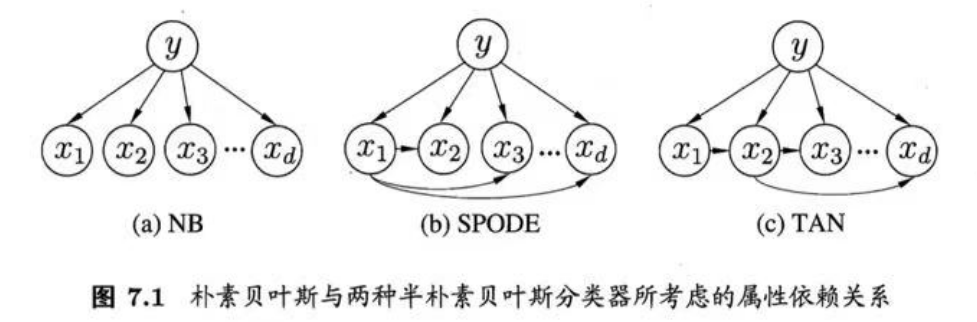
- SPODE（Super-Parent ODE）
7.5 贝叶斯网
- 结构：
- 贝叶斯网，亦称“信念网”，用有向无环图（DAG）来刻画属性之间的依赖关系，用条件概率表描述属性的联合概率分布
- 一个贝叶斯网 $B$ 由结构 $G$ 和参数 $\Theta$ 构成，$B=
- 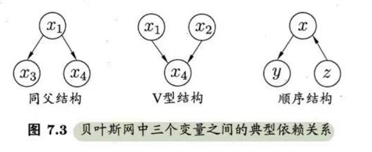
- 同父结构：给定父结点 $x_1$ 的取值，$x_3$ 和 $x_4$ 条件独立，$x_3⊥x_4|x_1$。但不满足边际独立性（若 $x_1$ 的取值未知，则 $x_3$ 和 $x_4$ 就不独立）
- V 型结构：$x_4$ 取值未知，$x_1$ 和 $x_2$ 相互独立，称“边际独立性”，记为 $x_1⊥x_2$ （两条竖线）
- 顺序结构：给定 $x$ 的值，则 $y$ 和 $z$ 条件独立。不满足边际独立性
- 为了分析有向图中变量间的条件独立性，可使用“有向分离”。
- 先把有向图转变为一个无向图，产生的无向图称为“道德图”，令父结点相连的过程称为“道德化”
- 找出有向图中的所有 V 型结构，在 V 型结构的两个父结点之间加上一条无向边
- 将所有有向边改为无向边
- 若变量 $x$ 和 $y$ 能在图上被 $z$ 分开，即从道德图中将变量集合 $z$ 去除后，$x$ 和 $y$ 分属两个连通分支，则称变量 $x$ 和 $y$ 被 $z$ 有向分离，$x⊥y|z$ 成立
- 先把有向图转变为一个无向图，产生的无向图称为“道德图”，令父结点相连的过程称为“道德化”
- 在可信的贝叶斯网络中，一个结点的马尔可夫毯即为该结点的父结点、子结点以及子结点的父结点
学习：
贝叶斯网学习的首要任务是根据训练数据集找出结构最“恰当”的贝叶斯网
推断：
推断：通过已知变量观测值来推断待查询变量的过程，已知变量观测值称为“证据”
- 贝叶斯网的近似推断常使用吉布斯采样来完成，是一种随机采样方法
- 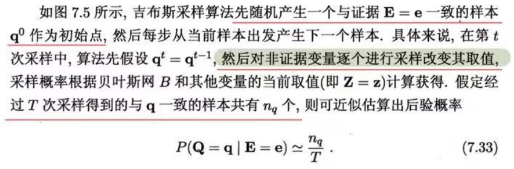
- 吉布斯采样是在贝叶斯网所有变量的联合状态空间与证据 $E=e$ 一致的子空间中进行“随机漫步”。每一步仅依赖于前一步的状态，这是一个“马尔科夫链”。$t\rightarrow ∞$ 时必收敛于一个平稳分布；对于吉布斯采样来说，这个分布恰好是 $P(Q|E=e)$。因此在 $T$ 很大时，吉布斯采样相当于根据 $P(Q|E=e)$ 采样，保证 $\frac{n_q}{T}$ 收敛于 $P(Q=q|E=e)$
- 马尔可夫链趋于平稳分布需很长时间，因此吉布斯算法的收敛速度很慢。若贝叶斯网中存在极端概率0或1，则不能保证马尔科夫链存在平稳分布
7.6 EM算法
- EM（Expectation-Maximization）：期望最大化算法
- 未观测变量 / 隐变量
- 原型是先基于参数推断隐变量期望，再基于已观测变量和隐变量对参数做极大似然估计
- 还可以基于 $\Theta^t$ 计算隐变量 $Z$ 的概率分布 $P(Z|X,\Theta^t)$。两个步骤：
- $E$ 步：以当前参数 $\Theta^t$ 推断隐变量分布 $P(Z|X,\Theta^t)$，并计算对数似然 $LL(\Theta|X,Z)$ 关于 $Z$ 的期望 $Q(\Theta|\Theta^t)=\mathbb{E}_{Z|X,\Theta^t}LL(\Theta|X,Z)$
- $M$ 步：寻找参数最大化期望似然，即 $\Theta^{t+1}=\arg\max_{\Theta}Q(\Theta|\Theta^t)$
- E步利用当前估计的参数值来计算对数似然的期望值；M步寻找能使E步产生的似然期望最大化的参数值
- EM 算法可看作用坐标下降法来最大化对数似然下界的过程
- 应用：GMM、k-means
- 贝叶斯分类器与一般意义上的“贝叶斯学习”有显著区别
- 前者是通过最大后验概率进行单点估计
- 后者是进行分布估计
第8章 集成学习
8.1 个体与集成
- 集成学习：构建并结合多个学习器来完成学习任务
- 个体学习器：由一个现有的学习算法从训练数据中产生（如C4.5决策树算法、BP神经网络算法）
- 同质集成中的个体学习器：基学习器；学习算法：基学习算法
- 异质集成中的个体学习器：组件学习器/个体学习器
- 要获得好的集成，个体学习器应“好而不同”（要有一定“准确性”，并且要有“多样性”）
- 式 8.3 关键假设：基学习器的误差相互独立
- 但在现实任务中，个体学习器是为解决同一个问题训练出来的，显然不可能相互独立
- 事实上，个体学习器的“准确性”和“多样性”本身就存在冲突
- 根据个体学习器的生成方式，集成学习方法分两大类：
- 序列化方法：个体学习器间存在强依赖关系、必须串行生成。（Boosting）
- 并行化方法：个体学习器间不存在强依赖关系、可同时生成。（Bagging和随机森林）
8.2 Boosting
- Boosting是一族可将弱学习器提升为强学习器的算法
- 机制：先从初始训练集训练出一个基学习器，再根据基学习器的表现对训练样本的分布进行调整，使得先前基学习器做错的训练样本在后续受到更多关注，然后基于调整后的样本分布来训练下一个基学习器；如此重复进行，直至基学习器数目达到事先指定的值 $T$，最终将这 $T$ 个基学习器加权结合
- adaboost用指数损失函数最小化，分类错误率也最小化，达到了贝叶斯最优错误率。指数损失函数是分类任务原本0/1损失函数的一致的替代损失函数。
- 指数损失函数是连续可微函数
- Boosting 算法在训练的每一轮都要检查当前生成的基学习器是否满足基本条件（检查基分类器是否比随机猜测好），一旦条件不满足，则当前基学习器即被抛弃，且学习过程停止
- Boosting 算法要求基学习器能对特定的数据分布进行学习，这可通过“重赋权法”实施；对无法接受带权样本的基学习算法，则可通过“重采样法“来处理
- 从偏差-方差分解的角度看，Boosting主要关注降低偏差。因此Boosting能基于泛化性能相当弱的学习器构建出很强的集成
8.3 Bagging与随机森林
- bagging：Bootstrap AGGregatING
- Bagging 基本流程：用自助法采样出 $T$ 个含 $m$ 个训练样本的采样集，然后基于每个采样集训练出一个基学习器，再将这些基学习器进行结合。在对预测输出进行结合时，Bagging 通常对分类任务使用简单投票法，对回归任务使用简单平均法
- 训练一个 Bagging 集成与直接使用基学习器算法训练一个学习器的复杂度同阶。说明 Bagging 是一个很高效的集成学习算法
- 包外样本作用
- 基学习器是决策树时，用来辅助剪枝，或用于估计决策树中各节点的后验概率以辅助对零训练样本结点的处理；
- 基学习器是神经网络时，可使用包外样本来辅助早停以减小过拟合风险
- Bagging 泛化误差的包外估计为 $\epsilon^{oob}=\frac{1}{|D|}\sum_{(x,y)\in D}\mathbb{I}(H^{oob}(x)\not= y)$
- 直接除以训练集 $D$ 样本个数，也就是说此处假设 $T$ 个基分类器的各自的包外样本的并集一定为训练集 $D$。（成立概率较大，对于每个基分类器，样本属于包内的概率为 0.632）
- 从偏差-方差分解角度看，Bagging 主要关注降低方差，因此在不剪枝决策树、神经网络等易受样本扰动的学习器上效用更为明显
- 随机森林（random forest）是 Bagging 的一个扩展变体。RF 在以决策树为基学习器构建 Bagging 集成的基础上，进一步在决策树的训练过程中引入了随机属性选择。
- 重点一：以决策树为基学习器
- 重点二：在基学习器训练过程中，选择划分属性时只使用当前结点属性集合的一个子集，再从这个子集中选择一个最优属性用于划分
- 多样性
- Bagging 中基学习器的”多样性“：通过样本扰动（对初始训练集采样）
- 随机森林中基学习器的”多样性“：不仅来自样本扰动，还来自属性扰动（个体学习器之间的差异度增加，泛化性提升）
- 随机森林的训练效率常优于 Bagging。随机森林用的是”随机型“的决策树，选择划分属性时只需考察一个属性子集
8.4 结合策略
- 学习器结合可能从三个方面带来好处
- 统计的原因：学习任务假设空间往往很大，可能有多个假设在训练集上达到同等性能，若使用单学习器可能因误选而导致泛化性能不佳。结合多个学习器则会减小这一风险
- 计算的原因：学习算法往往会陷入局部极小，有的局部极小点所对应的泛化性能可能很糟糕，而多次运行之后进行结合，可降低陷入糟糕局部极小点的风险
- 表示的原因：某些学习任务的真实假设可能不在当前学习算法所考虑的假设空间中，通过结合多个学习器，由于相应的假设空间有所扩大，有可能学得更好的近似
- 对基学习器进行结合的策略
- 平均法（数值型输出）
- 简单平均法
- 加权平均法
- 投票法（分类任务）
- 绝对多数投票法（若某标记得票过半数，则预测为该标记）
- 相对多数投票法
- 加权投票法
- 学习法
- 代表 Stacking：把个体学习器称为初级学习器，用于结合的学习器称为次级学习器或元学习器
- 思路：Stacking 先从初始数据集训练出初级学习器，然后“生成”一个新数据集用于训练次级学习器。在这个新数据集中，初级学习器的输出被当作样例输入特征，而初始样本的标记仍被当作样例标记。
- 平均法（数值型输出）
- 加权平均法的权重一般是从训练数据中学习而得，不完全可靠/过拟合。加权平均法未必一定优于简单平均法。个体学习器性能相差较大时使用加权平均法，个体学习器性能相近时使用简单平均法
- 若基学习器的类型不同，则其类概率值不能直接进行比较。在此情形下，通常可将类概率输出转化为类标记输出（例如将类概率输出最大的 $h_i^j(x)$ 设为1，其他设为0）然后再投票
- 训练阶段，次级训练集是利用初级学习器产生的，若直接用初级学习器的训练集来产生次级训练集，则过拟合风险会比较大；因此，一般是通过使用交叉验证或留一法这样的方式，用训练初级学习器未使用的样本来产生次级学习器的训练样本
8.5 多样性
误差-分歧分解
- $\overline{A}(h|x)=\overline{E}(h|x)-E(H|x)$
- $\overline{E}=\sum_{i=1}^T w_iE_i$：个体学习器泛化误差的加权均值
- $\overline{A}=\sum_{i=1}^T w_i A_i$：个体学习器的加权分歧值
- $E =\overline{E}-\overline{A}$：个体学习器准确性越高、多样性越大，则集成越好
多样性度量
- 不合度量
- 相关系数
- $Q-$统计量
- $\mathcal{K}-$统计量
- 分类器 $h_i$ 与 $h_j$ 在 $D$ 上完全一致，则 $\mathcal{K}=1$
- 若它们仅是偶然达成一致，则 $\mathcal{K}=0$
- $\mathcal{K}$ 越大，多样性越小
多样性增强
- 数据样本扰动：通常基于采样法
- Bagging 中使用自主采样；Adaboost 中使用序列采样
- 对稳定基学习器（线性学习器、SVM、朴素贝叶斯、k近邻）进行集成往往需使用输入属性扰动等其他机制
输入属性扰动（随机子空间算法）
输出表示扰动
- 翻转法：随机改变一些训练样本的标记
- 输出调制法：将分类输出转化为回归后构建个体学习器
- ECOC法：将原任务拆解为多个可同时求解的子任务。ECOC利用纠错输出码将多分类任务拆解为一系列二分类任务来训练基学习器
- 算法参数扰动
- 数据样本扰动：通常基于采样法
随机森林中同时使用了数据样本扰动和输入属性扰动
第9章 聚类
9.1 聚类任务
- 无监督学习：训练样本的标记信息是未知的，目标是通过对无标记训练样本的学习来揭示数据的内在性质及规律，为进一步的数据分析提供基础
- 聚类既能作为一个单独过程，用于寻找数据内在的分布结构，也可作为分类等其他学习任务的前驱过程
9.2 性能度量
- 聚类性能度量亦称聚类“有效性指标”
- 对聚类结果，需通过某种性能度量来评估其好坏；另一方面，若明确了最终将要使用的性能度量，可直接将其作为聚类过程的优化目标
- 聚类结果希望“簇内相似度”高且“簇间相似度”低
- 聚类性能度量，两类
- 将聚类结果与某个“参考模型”进行比较，称为外部指标
- Jaccard 系数，FM 指数（Fowlkes and Mallows Index，简称 FMI），Rand 指数（Rand Index，简称 RI）
- 结果值均在 [0,1] 区间，值越大越好
- 直接考察聚类结果而不利用任何参考模型，称为内部指标
- DB 指数（Davies-Bouldin Index，简称 DBI），Dunn 指数（Dunn Index，简称 DI）
- DBI 的值越小越好；DI 值越大越好
- 将聚类结果与某个“参考模型”进行比较，称为外部指标
9.3 距离计算
- 距离度量的性质
- 非负性
- 同一性（自反）：$dist(x_i,x_j)=0$ 当且仅当 $x_i=x_j$
- 对称性
- 直递性（三角不等式）
- 闵可夫斯基距离 $dist_{mk}(x_i,x_j)=(\sum_{u=1}^n|x_{iu}-x_{ju}|^p)^{\frac{1}{p}}$
- 注意是绝对值
- 闵可夫斯基距离可用于有序属性（离散属性和连续属性都可能是有序属性）
- 对无序属性，可用 VDM（Value Difference Metric）
- 属性 $u$ 上两个离散值 $a$ 和 $b$ 之间的 VDM 距离为 $VDM_p(a,b)=\sum_{i=1}^k|\frac{m_{u,a,i}}{m_{u,a}}-\frac{m_{u,b,i}}{m_{u,b}}|^p$
- 对混合属性，可使用 MinkovDM
- $MinkovDM_p(x_i,x_j)=(\sum_{u=1}^{n_c}|x_{iu}-x_{ju}|^p+\sum_{u=n_c+1}^n VDM_p(x_{iu},x_{ju}))^{\frac{1}{p}}$
- 用于相似度度量的距离未必一定要满足距离度量的所有基本性质，尤其是直递性。
- 距离不再满足直递性，这样的距离称为“非度量距离”
9.4 原型聚类
- “基于原型的聚类”
- 假设：聚类结构能通过一组原型刻画
- 过程：先对原型初始化，然后对原型进行迭代更新求解
- 代表：k均值聚类，学习向量量化（LVQ），高斯混合聚类
- “原型”是指样本空间中具有代表性的点
- k均值算法（k-means）
- 无监督
- 最小化平方误差 $E=\sum_{i=1}^k\sum_{x\in C_i}||x-\mu_i||_2^2$
- 一定程度上刻画了簇内样本围绕簇均值向量的紧密程度，$E$ 值越小则簇内样本相似度越高
- 最小化 $E$ 是 NP难问题。k均值用贪心策略，通过迭代优化来近似求解
- 学习向量量化（Learning Vector Quantization，LVQ）
- 有监督
- LVQ 假设数据样本带有类别标记，学习过程利用样本的监督信息来辅助聚类
- 对原型向量进行初始化时，可以对第 $q$ 个簇从类别标记为 $t_q$ 的样本中随机选取一个作为原型向量（$t_i$ 可以有相同）
- 每一轮迭代，随机选一个有标记训练样本，找出距离最近的原型向量
- 竞争学习的“胜者为王”策略。SOM 是基于无标记样本的聚类算法，LVQ 可看作 SOM 基于监督信息的扩展
- 根据两者的类别标记是否一致来对原型向量进行相应的更新
- 对样本 $x_j$，若最近的原型向量 $p_{i^}$ 与 $x_j$ 的类别标记相同，则令 $p_{i^}$ 向 $x_j$ 的方向靠拢，否则远离
- Voronoi 剖分：对样本空间 $\mathcal{X}$ 的簇划分 $\{R_1,R_2,…,R_q\}$。对任意样本 $x$，被划分入与其距离最近的原型向量所代表的簇中。即每个原型向量 $p_i$ 定义了与之相关的一个区域 $R_i$，该区域中每个样本与 $p_i$ 的距离不大于它与其他原型向量 $p_{i’}$ 的距离。
- 高斯混合聚类（Mixture-of-Gaussian）
- k均值、LVQ 用原型向量刻画聚类结构；高斯混合聚类用概率模型（高斯分布）来表达聚类原型，簇划分则由原型对应后验概率确定
- 定义高斯混合分布 $p_\mathcal{M}(x)=\sum_{i=1}^k\alpha_i\cdot p(x|\mu_i,\Sigma_i)$。$\alpha_i$ 是混合系数，和为1。样本的生成过程：
- 根据 $\alpha_1,\alpha_2,…,\alpha_k$ 定义的先验分布选择高斯混合成分，其中 $\alpha_i$ 为选择第 $i$ 个混合成分的概率
- 根据被选择的混合成分的概率密度函数进行采样，从而生成相应的样本
- $z_j$ 表示生成样本 $x_j$ 的高斯混合成分。根据贝叶斯定理，$z_j$ 的后验分布对应于 $p_\mathcal{M}(z_j=i|x_j)=\frac{\alpha_i\cdot p(x_j|\mu_i,\Sigma_i)}{\sum_{l=1}^k \alpha_l\cdot p(x_j|\mu_l,\Sigma_l)}$，即样本 $x_j$ 由第 $i$ 个高斯混合成分生成的后验概率
- 模型参数 $\{(\alpha_i,\mu_i,\Sigma_i)\}$ 求解：最大化对数似然，常用 EM 算法进行迭代优化求解
- $\mu_i=\frac{\sum_{j=1}^m\gamma_{ji} x_j}{\sum_{j=1}^m\gamma_{ji}}$ ：各混合成分的均值可通过样本加权平均来估计，样本权重是每个样本属于该成分的后验概率
- $\alpha_i=\frac{1}{m}\sum_{j=1}^m\gamma_{ji}$：每个高斯成分的混合系数由样本属于该成分的平均后验概率确定
- 高斯混合模型的 EM 算法：
- E 步：先根据当前参数 $\{(\alpha_i,\mu_i,\Sigma_i)\}$ 来计算每个样本属于每个高斯成分的后验概率 $\gamma_{ji}$
- M 步：再根据对对数似然求导/拉格朗日法，更新模型参数 $\{(\alpha_i,\mu_i,\Sigma_i)\}$
- 迭代停止条件：已达到最大轮数 / 似然函数 $LL(D)$ 增长很少甚至不再增长
9.5 密度聚类
- “基于密度的聚类”
- 假设：聚类结构能通过样本分布的紧密程度确定
- 过程：从样本密度的角度来考察样本之间的可连接性，并基于可连接样本不断扩展聚类簇
- 代表：DBSCAN、OPTICS、DENCLUE
- DBSCAN（Density-Based Spatial Clustering of Applications with Noise）
- 基于一组“邻域”参数 $(\epsilon,MinPts)$ 来刻画样本分布的紧密程度
- 核心对象：$\epsilon$-邻域内至少包含 $MinPts$ 个样本
- 密度直达：$x_j$ 在 $x_i$ 的 $\epsilon$-邻域中，且 $x_i$ 是核心对象，则称 $x_j$ 由 $x_i$ 密度直达
- 通常不满足对称性（$x_j$ 不一定是核心对象）
- 密度可达：对 $x_i$ 与 $x_j$，若存在样本序列 $p_1,p_2,…,p_n$，其中 $p_1=x_i,p_n=x_j$，且 $p_{i+1}$ 由 $p_i$ 密度直达，则称 $x_j$ 由 $x_i$ 密度可达
- 满足直递性，但不满足对称性
- 密度相连：对 $x_i$ 与 $x_j$，若存在 $x_k$ 使得 $x_i$ 与 $x_j$ 均由 $x_k$ 密度可达，则称 $x_i$ 与 $x_j$ 密度相连
- 满足对称性
核心对象之间的密度直达/可达满足对称性
DBSCAN 将“簇”定义为：由密度可达关系导出的最大的密度相连样本集合
- 给定邻域参数 $(\epsilon,Minpts)$，簇 $C\subseteq D$ 是满足连接性和最大性的非空样本子集
- 连接性：$x_i\in C,x_j\in C\Rightarrow x_i与x_j密度相连$
- 最大性：$x_i\in C,x_j由x_i密度可达 \Rightarrow x_j\in C$
- 若 $x$ 为核心对象，由 $x$ 密度可达的所有样本组成的集合 $X$ 为满足连接性和最大性的簇
- 给定邻域参数 $(\epsilon,Minpts)$，簇 $C\subseteq D$ 是满足连接性和最大性的非空样本子集
- 层次聚类
- 假设：能够产生不同粒度的聚类结果
- 过程：在不同层次对数据集进行划分，从而形成树形的聚类结构
- 代表：AGNES（自底向上），DIANA（自顶向下）
- AGNES（AGglomerative NESting）
- 是一种采用自底向上聚合策略的层次聚类算法。先将数据集中的每个样本看作一个初始聚类簇，然后在算法运行的每一步中找出距离最近的两个聚类簇进行合并，并对合并得到的聚类簇的距离矩阵进行更新；不断重复，直至达到预设的聚类簇个数
- 距离：
- 最小距离 $d_{min}$（由两个簇的最近样本决定），AGNES 算法被相应地称为“单链接”算法
- 最大距离 $d_{max}$（..最远样本），“全链接”算法
- 平均距离 $d_{avg}$（所有样本决定），“均链接”算法
第10章 降维与度量学习
10.1 k近邻学习
- 什么是KNN？
- 监督学习方法。给定测试样本，基于某种距离度量找出训练集中与其最靠近的 $k$ 个训练样本，然后基于这 $k$ 个“邻居”的信息来进行预测
- KNN 在分类任务中可使用“投票法”，在回归任务中可使用“平均法”，还可基于距离远近进行加权平均或加权投票，距离越近的样本权重越大
- 懒惰学习，在训练阶段仅仅是把样本保存起来，训练时间开销为零，待收到测试样本后再进行处理
- 当训练样本趋于无穷时 $(n\rightarrow ∞)$，最近邻的错误率最多是最佳错误率的两倍；有限样本时的结论尚不清楚
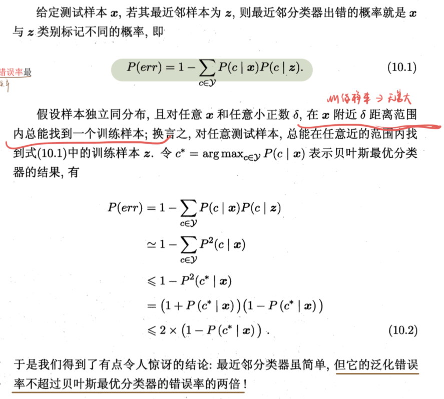
- 补充假设，$P(c|x)$ 必须是连续函数（对于连续函数 $f(x)$ 和任意小正数 $\delta$，$f(x)\approx f(x+\delta)$），即对于两个非常像的样本 $z$ 和 $x$ 有 $P(c|x)\approx P(c|z)$
- 降低NN的计算、存储代价
- 近似最近邻（ANN）
- 不要求一定是距离最短的 $k$ 个
- 第 $k$ 个NN的距离是 $d_k$，ANN要求其选取的所有 $k$ 个样例的距离 $\hat{d}\leq (1+\epsilon)d_k$ 即可
- 可将KNN搜索速度提高几个数量级
- 二值哈希（binary hashing）
- hash函数 $f_i$ 将 $\mathbb{R}^d$ 分成两部分，$f_i=0/1$
- m个hash函数，每个 $x$ 表示为m个bits
- $m\ll d$，减少计算和存储
- 进一步：基于深度学习的哈希
- 近似最近邻（ANN）
10.2 低维嵌入
- 上一节的讨论是基于密采样假设：任意测试样本 $x$ 附近任意小的 $\delta$ 距离范围内总能找到一个训练样本
- 维数灾难：在高维情形下出现的数据样本稀疏、距离计算困难等问题
- KNN中若基于密采样假设，当属性维度很高时，需要很多数据（密采样假设：样本的每个 $\epsilon-$邻域都有近邻）
- 缓解途径之一：降维
- 高维空间中的低维嵌入
- 多维缩放（Multiple Dimensional Scaling，MDS）
- 要求原始空间中样本之间的距离在低维空间中得以保持
- 在保持距离矩阵相同的前提下，$d’$ 维空间的样本集合 $Z\in\mathbb{R}^{d’×m}$ 的内积矩阵 $B=Z^TZ\in\mathbb{R}^{m×m}$ 可以由距离矩阵得到。再对 $B$ 进行特征值分解即可得到 $Z$
- 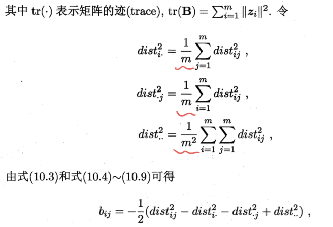
- 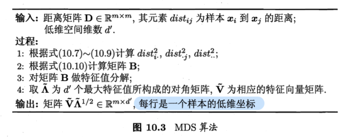
- 实对称矩阵的性质
- 实对称矩阵的属于不同特征值对应的特征向量相互正交
- 设 $A$ 为 $n$ 阶实对称矩阵，则必存在正交阵 $Q$，使得 $Q^{-1}AQ=Q^TAQ=\Lambda$
- MDS中，$B=V\Lambda V^T$
- 线性降维 $Z=W^TX$，$W\in\mathbb{R}^{d×d’}$ 是变换矩阵，$X=(x_1,..,x_m)\in\mathbb{R}^{d×m}$，$Z\in\mathbb{R}^{d’×m}$ 是样本在新空间的表达
- 变换矩阵可视为 $d’$ 个 $d$ 维基向量，$z_i=W^Tx_i$ 是原属性向量在新坐标系 $\{w_1,…,w_{d’}\}$ 中的坐标向量
- 新空间中的属性是原空间中属性的线性组合
10.3 主成分分析
PCA（Principal Component Analysis，主成分分析）
- PCA利用正交变换把线性相关变量表示的观测数据转换为少数几个由线性无关变量表示的数据，线性无关的变量称为主成分，实则，协方差矩阵的特征向量。PCA属于降维方法。
PCA是一种线性的特征提取方法（组合？），也是一种线性的降维技术
降维的好处 / 舍弃最小的 $d-d’$ 个特征值的特征向量的好处
- 降低资源需求
- 去除（白）噪声（当特征值非常小时，可能是由于白噪声，或其他类型的噪声）
- 舍弃这部分信息后能使样本的采样密度增大（降维的重要动机）
- 解释与理解（降维后可视化）
什么是主成分？
- 是一组向量，可以较低维度上概括原本较高维度数据的分布
- 实则，协方差矩阵的特征向量
需要多少维度？
1、用户事先指定
2、在 $d’$ 值不同的低维空间中对 $k$ 近邻分类器（或其他开销较小的学习器）进行交叉验证选取较好的 $d’$ 值
3、从重构的角度设置一个重构阈值，比如 累积的特征值已经超过所有特征值之和的90%，则选择在此停止
如何处理新样本？
- 保留 $W^$ 与*样本的均值向量，即可用向量减法和矩阵-向量乘法将新样本投影到低维空间
- 保存均值向量是为了通过向量减法对新样本同样进行中心化
PCA中：（投影值的）方差 = 协方差矩阵的特征值 = 近似误差的减少
特征值越大，其对应的特征向量（投影方向）将更大幅度地减小近似误差
最近重构性 角度（最小重构误差）
最小化 $\sum_{i=1}^{m}||\sum_{j=1}^{d’}z_{ij}w_j-x_i||_2^2\propto -tr(W^T(\sum_{i=1}^mx_ix_i^T)W)$
样本点 $x_i$ 在低维坐标系中的投影是 $z_i=(z_{i1};z_{i2};..;z_{id’})$，其中 $z_{ij}=w_j^Tx_i$ 是 $x_i$ 在低维坐标系下第 $j$ 维的坐标。基于 $z_j$ 来重构 $x_i$，得 $\hat{x}_i=\sum_{j=1}^{d’}z_{ij}w_j$。
$w_j$ 是标准正交基向量。
即 $\min_{W}-tr(W^TXX^TW)$ s.t. $W^TW=I$
$Z=W^TX$，即寻找 $W\in\mathbb{R}^{d×d’}$ 使协方差矩阵 $\frac{1}{m}ZZ^T$ 对角线元素之和（迹）/ $Z$ 各行方差之和 最大
$\min_{W}-tr(W^TXX^TW)=\max_{W}\sum_{i=1}^{d’}\lambda_i$。令 $\lambda_1,..\lambda_{d’}$ 和 $w_1,…w_{d’}$ 分别为矩阵 $XX^T$ 的前 $d’$ 个最大的特征值和单位特征向量。
重建：$x=\overline{x}+WW^T(x-\overline{x})=\overline{x}+Wy$
特征值越大，其对应的特征向量（投影方向）将更大幅度地减小近似误差
最大可分性 角度（最大化投影方差）
- 方差是衡量新特征包含信息多少的度量，有时也称能量
- 投影后样本点的方差是 $\sum_i W^Tx_ix_i^TW$，可写为 $\max_W tr(W^TXX^TW)$ s.t. $W^TW=I$
- $y=W^T(x-\overline{x})$
- $W$ 是正交矩阵，那么如果使用了所有的特征向量，PCA只是一个位移加一个旋转变换，使新特征各个维度互不相关（对高斯分布，还意味着互相独立）
- 且在此情况下，范数不变 $||y||=||x-\overline{x}||$
PCA算法步骤（给定样本集、降维后低维空间的维度 $d’$）
- 对所有样本进行中心化 $X(I-\frac{1}{m}11^T)$
- 计算样本的协方差矩阵 $XX^T$
- 对协方差矩阵 $XX^T$ 做特征值分解（实践中常对 $X$ 进行奇异值分解代替）
- 取最大的 $d’$ 个特征值所对应的特征向量 $w_1,w_2,…,w_{d’}$，得到投影矩阵 $W^*=(w_1,w_2,…,w_{d’})$
PCA也可看作是逐一选取方差最大方向
- 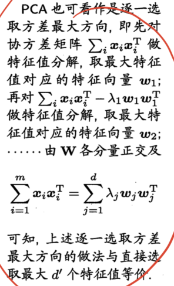
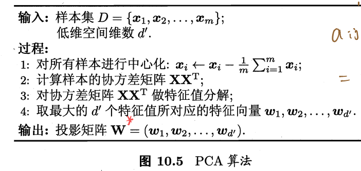
白化变化
$\Sigma=\sum_{i=1}^d \lambda_i\xi_i\xi_i^T=\sum_{i=1}^d\lambda_i w_i w_i^T=W\Lambda W^T$
$y=(W\Lambda^{-\frac{1}{2}})^T(x-\mu)$ （即 $\frac{x-\mu}{\sigma}$）（直接记）
$y\sim\mathcal{N}(0,I)$，各向同性
什么时候需要做白化变换？
- 后续(分类)任务中是否需要特征的相对重要性
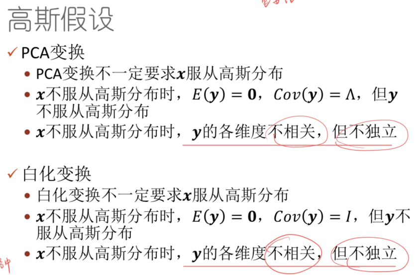
什么时候使用/不使用PCA？
- 如果数据服从高斯分布
- 单峰分布（单个高斯分布）
- 白噪声
- $x=x’+\epsilon$，$\epsilon\sim\mathcal{N}(0,\Gamma)$
- 噪声独立于数据，噪声均值为0，各维独立（$\Gamma$ 是对角阵），噪声幅度有限
- 此时PCA效果最佳
- 实际上如果特征值服从指数递减即可
- PCA不能处理离群值（PCA本质是拟合线性数据，但outliner是高度非线性的）
- 如果数据服从高斯分布
PCA有利于表示数据，但和分类无关
- PCA 人脸识别
- 计算训练样本的协方差矩阵并计算其特征值和特征向量，保留最大的几个特征值对应的特征向量作为特征脸
- 高维的人脸可以用特征脸的线性组合近似表示
10.4 核化线性降维
核主成分分析（Kernelized PCA, KPCA）：一种非线性降维方法，基于核技巧对线性降维方法进行“核化”
$\phi(X)\phi^T(X)$ 当数据维度大时，难以特征值分解
特征向量 $w_j$ 可以表示为所有 $\phi(x_i)$ 的线性组合
对于新样本 $x$，投影后的第 $j(j=1,2,…,d’)$ 维坐标为
- KPCA需对所有样本求和，因此它的计算开销较大
10.5 流形学习
流形学习（manifold learning）：一类借鉴了拓扑流形概念的降维方法
- 流形：在局部具有欧氏空间的性质，能用欧氏距离来进行距离计算
等度量映射（Isomap）
低维嵌入流形上两点间距离是“测地线”距离
如何计算测地线距离：利用流形在局部上与欧氏空间同胚，对每个点基于欧氏距离找出其近邻点，然后就能建立一个近邻连接图，图中近邻点之间存在连接，非近邻点之间不存在连接。
计算两点间测地线距离的问题，转变为计算近邻连接图上两点间的最短路径问题。可用Dijkstra算法或Floyd算法。
得到任意两点距离后，可用MDS获得样本点在低维空间中的坐标。
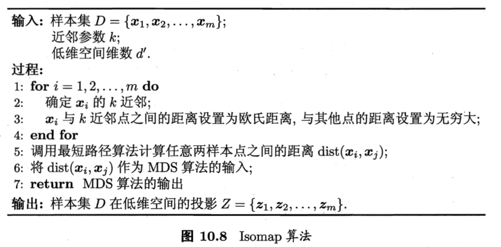
对于新样本，如何映射到低维空间？
- 将训练样本的高维空间坐标作为输入、低维空间坐标作为输出，训练一个回归学习器来对新样本的低维空间坐标进行预测。
- 近邻图的构建（$k$近邻图、$\epsilon$近邻图），不足：
- 近邻范围指定得较大：距离很远的点可能被误认为近邻（短路）
- 近邻范围指定得较小：图中有些区域可能与其他区域不存在连接（断路）
局部线性嵌入（Locally Linear Embedding, LLE）
Isomap：保持近邻样本之间的距离
LLE：保持邻域内样本之间的线性关系
总结
- MDS的降维准则：原始空间中样本之间的距离在低维空间中得以保持
- PCA的降维准则：要求低维子空间对样本具有最大可分性
- Isomap与MDS区别：距离矩阵计算方法不同
- MDS中距离矩阵即为普通样本之间欧氏距离
- Isomap中距离矩阵要先构建近邻图，再用最短路径算法，遵循流形假设
第11章 特征选择与稀疏学习
- 常见的特征选择方法：过滤式、包裹式和嵌入式
- 过滤式：先对数据集进行特征选择，然后再训练学习器，特征选择过程与后续学习器无关
- 包裹式：直接把最终将要使用的学习器的性能作为特征子集的评价准则
- 嵌入式：将特征选择过程与学习器训练过程融为一体，两者在同一个优化过程中完成（LASSO）
模式识别
第八章 概率方法
- PDF：probability density function
- PMF：probability mass function
- 估计PDF就是估计参数
- 推理 inference：估计各种密度函数
- 决策 decision：据估计得到的PDF对任意的 $x$ 预测输出
非参数估计（Non-parametric）：不假设PDF是任何已知形式的函数
使用训练数据直接估计空间中任何点的密度
非参数不代表无参数，实际上是可以允许无穷多的参数；而参数估计的参数个数是有限的
参数化估计（ML,MAP频率派观点，贝叶斯 贝叶斯派观点）
- 最大似然 ML
- 视 $\theta$ 为固定参数，假设存在一个最佳的参数（或参数的真实值是存在的），目的是找到这个值
- 给定一个数据集 $D$ 和一个参数化的密度 $p$，我们定义 $p(D|\theta)=\prod_{i=1}^np(x_i|\theta)$
- $p(D|\theta)$ 被称为（当参数值固定为 $\theta$ 时，观测到训练数据 $D$ 的）似然
- 因为 $\theta$ 不是一个随机变量，$p(D|\theta)$ 不是一个条件分布。因此通常会定义一个似然函数 $l(\theta)=\prod_{i=1}^np(x_i|\theta)$ ，则似然是关于 $\theta$ 的函数
- 最大后验 MAP
- 考虑先验分布 $p(\theta)$ ，将其影响代入，但仍然假设存在最优的参数
- 将先验知识和训练数据同时纳入考虑（当只有少量训练样本可用时，可引入关于参数的领域知识）
- 假设不存在关于 $\sigma$ 的先验知识，但先验地假设 $\mu$ 服从高斯分布，如均值为5.5，且方差 $\sigma_0^2$ 很大，$p(\theta)=p(\mu,\sigma)=\frac{1}{\sqrt{2\pi}\sigma_0}\exp(-\frac{(\mu-5.5)^2}{2\sigma_0^2})$
- MAP 估计求解 $\arg\max_\theta p(\theta)l(\theta)=\arg\max_{\theta}\{\ln p(\theta)+ll(\theta)\}$
- 贝叶斯
- 贝叶斯观点中，$\theta$ 是一个分布/随机变量，所以估计应该是估计一个分布，而不是一个值（点）
- $p(\theta|D)$：是贝叶斯参数估计的输出，是一个完整的分布，而不是一个点
- 参数估计的一些性质
- 渐进性质：研究 $n\rightarrow ∞$ 时的性质。如一致性：随样本容量增大收敛到参数真值的估计量
- 无偏估计：估计量的期望和被估计量的真值相等
- 最大似然 ML
概率的频率学派观点
- ML，MAP，使用训练样本来找到这组固定但未知的参数值
- 估计结果是位于可能的参数空间中（不包含随机性）的一个固定点，因此被称为点估计
- 点估计方法为 $\theta$ 返回一个单独的最优值
概率的贝叶斯学派观点
- 参数也被视为随机变量，要估计的不是一组固定的值，而是一些分布
第九章 距离度量与数据变换
- metric data：实数向量、可以计算距离或相似程度
- 标记数据 Nominal data
- 不是连续的实数值，也不可以比较大小，不可以比较相似性
- 不相似程度 / 距离：欧氏距离
- 相似程度：内积 / RBF核
度量metric必须满足
- 非负
- 自反：$d(x,y)=0$ 当且仅当 $x=y$
- 对称
- 三角不等式
马氏距离：$d^{\color{Red}{2}}(x,y)=(x-y)^T\Sigma^{-1}(x-y)$
- $\Sigma$ 是数据的协方差矩阵
- 若对数据进行白化操作，则原空间中的马氏距离等价于白化变化以后新空间的欧式距离
- 推广：用半正定矩阵 $A$ 代替 $\Sigma^{-1}$
- $A$ 半正定，存在 $G$，使得 $A=G^TG$
- $d^2_A(x,y)=||Gx-Gy||_2^2$
- $A$ 没有被限定是正定的，通过放松，$||x-y||_A$ 不再是一个严格意义上的度量，因为即使 $x\not= y$，仍有可能 $||x-y||_A=0$。但这个放松允许我们学得一个固有的低维表示。如 $G\in \mathbb{R}^k×\mathbb{R}^d$ 且 $k<d$ 时，$A$ 是半正定但不是正定的，$Gx$ 比 $x$ 有更低的维度
- 学习 $A$：利用标记信息
- 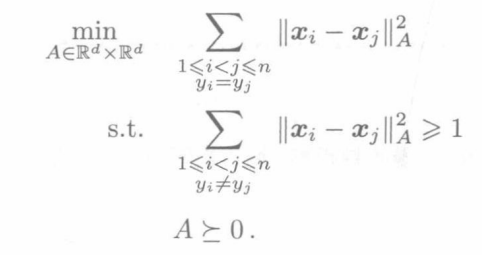
- 学到的距离度量应当使同一类的样例之间的距离越小越好（通过最小化目标函数），而使不同类的样例之间的距离比较大（通过第一个约束）。学到的最优距离度量对二分类问题很有用
- Minkowski distance：$d_p(x,y)=(\sum_{i=1}^d|x_i-y_i|^p)^{\frac{1}{p}}$
- $p\geq 1$ 时是metric
- $L_0$ 不是metric
幂平均函数
- $M_p(x_1,…,x_n)=({\color{Red}\frac{1}{n}}\sum_{i=1}^nx_i^p)^{\frac{1}{p}}$
- 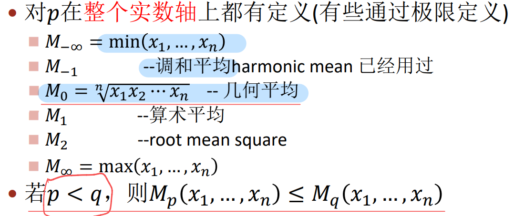
- 若 $p<q$，则 $M_p(x_1,…,x_n)\leq M_q(x_1,…,x_n)$（但 $||x||_p\geq ||x||_q$）
幂平均核
- $M_p(x,y)=\sum_{i=1}^dM_p(x_i,y_i)$
- 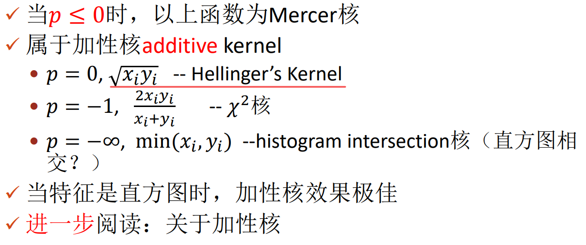
- 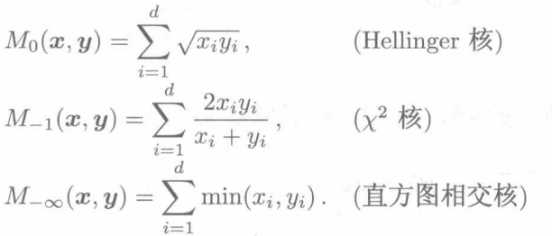
- 直方图相交核（Histogram Intersection Kernel，HIK）
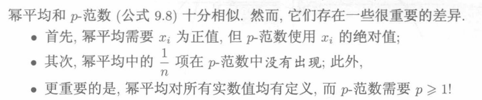
第十章 信息论与决策树
- 均匀分布是最不确定的情况，霍夫曼编码需要 $\lceil \log_2m\rceil$ 个比特编码每个符号
- 如果分布是连续的：微分熵 $h(x)=-\int p(x)\ln(p(x))dx$
- 若 $X\sim N(\mu,\sigma^2)$，则 $h(X)=\frac{1}{2}\ln(2\pi e\sigma^2)$ nats
- 如果 $\sigma\ll 1$，$N(0,\sigma^2)$ 的熵是负的
- 在所有均值和方差固定的连续分布中，高斯分布具有最大的熵（或者说，不确定性最大）
- 在知道均值的情况下，指数分布的熵最大
- 联合熵
- $H(X,Y)=-\sum_x\sum_yP(x,y)\log_2P(x,y)$
- $h(X,Y)=-\int p(x.y)\ln p(x,y)dxdy$
- 条件熵
- $H(X|Y)=\sum_yp(y)H(X|Y=y)=-\sum_{x,y}P(x,y)\log_2\frac{P(x,y)}{P(y)}$
- $h(X|Y)=-\int p(x,y)\ln\frac{p(x,y)}{p(y)}dxdy$
- 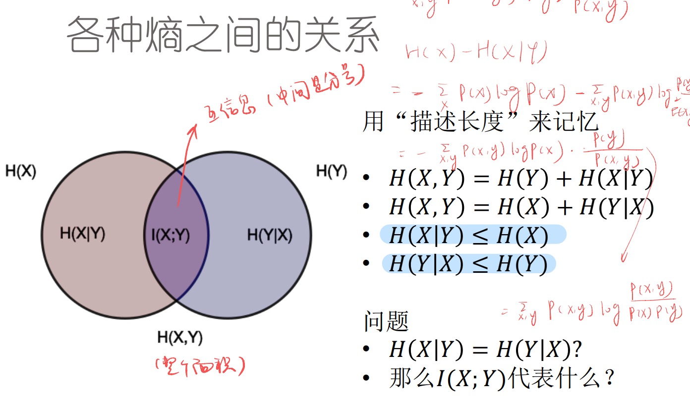
KL和交叉熵：最小化KL = 最小化交叉熵
第十一章 “稀疏”数据、未对齐数据
- 图像在什么意义上稀疏？
- 不是在原来的空间，而是在某种更有效的（通常高维但稀疏的）表达方式上
- 动态时间弯曲
- 假设两组（顺序的）数据 $x=(x_1,…,x_n),\, y=(y_1,…,y_m)$ 匹配
- 要求 $\forall i$，$x_i$ 必须和一个 $y_j$ 匹配，反之亦然
- 但是一个 $x_i$ 可以和多个 $y_j$ 匹配，一个 $y_i$ 也可以和多个 $x_j$ 匹配
PR_11 HMM
随机过程：是一个有序的随机变量序列，可以看作是一个随机系统中状态随着时间演化的过程
马尔可夫性质
- $P(X_t|X_{1:t-1})=P(X_t|X_{t-1})$
- 无记忆性
- 好处是防止维度诅咒，$P(X_t|X_{1:t-1})$ 需要 $N^t$ 存储空间
离散时间马尔科夫链（DTMC）
- DTMC中，随机变量被认为是可观测的
GPT：generative pretraining transformer。目的是拟合自然语言的分布 $P(x)$
HMM 学习中的三个问题
- Evaluation：
- 输入：一个完全指定的HMM模型，即 $\lambda=(\pi,A,B)$ 已知；一个完全观测的输出序列 $O=O_{1:T}$
- 输出： $P(O|\lambda)$ ，在这个模型 $\lambda$ 中观察到特点输出 $O$ 的概率
- 似然
- 作用：看作score，选择最适合的模型
Decoding：
- 输入：一个完全指定的HMM模型，即 $\lambda=(\pi,A,B)$ 已知；一个完全观测的输出序列 $O=O_{1:T}$；某个标准criterion
- 输出：一个完全指定的隐变量序列 $X_{1:T}$ 的值
- 作用：
- 语音识别中状态可能有实际意义；可以用来观察模型结构，优化模型
Learning：
- 输入：
- 网络结构，状态数、输出数
- 若干观测序列 $\{O\}$
- 输出：最优的参数 $\lambda=\{\pi,A,B\}$ 使得 $P(\{O\}|\lambda)$ 最大（最大似然）
- 有时候一个足够长的观测序列就够了
- 输入：
- 前两个问题：动态规划；第三个问题：期望最大化 EM
- Evaluation：